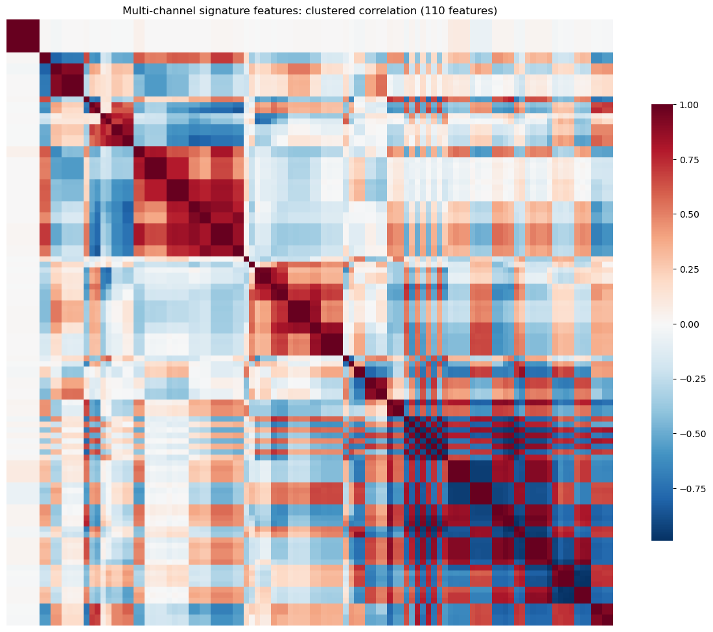
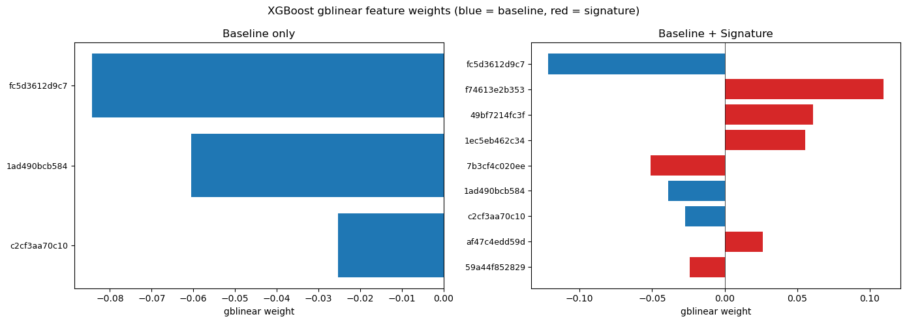

Signature Methods (Part 4 — Rolling Signatures in Volatility Forecasts)
Steve Yang
2026-02-06
In Part 3 of the signature series we built intuition for which functionals signatures represent efficiently (variance, averages) and which they do not (running maximum, drawdown). The central result from that investigation was that signatures provide a principled feature hierarchy for ordered interactions, but augmentation design determines what information is accessible at low depth, and some targets are structurally incompatible with low-order truncation.
In this post we put that theory to work. We take the SPY volatility forecasting setup from our volatility series — Exponential Smoothing (ES), Smooth Transition Exponential Smoothing (STES), and XGBoost-STES — and ask a concrete question: can rolling signature features, computed over a trailing window of daily returns, improve out-of-sample variance forecasts within the STES framework?
The answer is negative. However, the experiment is worth reporting in detail because the way it fails is informative. We show that:
Raw signature features from augmented return paths are highly redundant — 20+ coordinates collapse into 6 independent clusters. Level-2 features built from augmented multi-channel data produce 50+ correlated features.
Adding those 6 features to STES increases the parameter count and requires L2 regularization via cross-validation to avoid overfitting. The CV-selected penalty shrinks the signature weights toward zero.
Enriching the path to four channels (log-price, |r|, r^2, r \cdot \mathbb{1}_{r<0}) yields no improvement — the signature of the multi-channel path still fails to beat baseline features.
Inspecting the predicted smoothing parameter \alpha_t reveals that signature features make the models more reactive but not more accurate — the extra variation in \alpha is noise, not signal.
Note
This is my first post published as a Quarto notebook. Most code blocks are folded by default — expand them if you want to see the implementation details. The full notebook is available in the blog repository. This post depends on the alphaforge project (data + dataset plumbing) and the volatility-forecast project (models + evaluation).
1 Setup
1.1 Models
We forecast next-day squared returns y_t = r_{t+1}^2 using three model architectures from our volatility series:
ES (Exponential Smoothing): A fixed-decay exponential moving average v_{t+1} = \alpha r_t^2 + (1-\alpha) v_t with constant \alpha. Simple and hard to beat.
STES: The smoothing parameter \alpha_t = \sigma(\beta^\top X_t) is a logistic function of features X_t (current-day return, absolute return, squared return). The model learns to adapt its reaction speed — going “fast” after shocks and “slow” during calm.
XGBoost-STES: Replaces the linear map \beta^\top X_t with an XGBoost regressor trained end-to-end by backpropagating through the recursive variance filter. See Part 3 for the derivation.
Our experiment adds rolling signature features to X_t and asks whether the models make better \alpha_t decisions with access to the shape of the recent price path.
Code
# SPY settingsSPY_TICKER ="SPY"SPY_START = pd.Timestamp("2000-01-01", tz="UTC")SPY_END = pd.Timestamp("2023-12-31", tz="UTC")SPY_BDAYS = pd.bdate_range(SPY_START, SPY_END, tz="UTC")SPY_START_BDAY = SPY_BDAYS.min()SPY_END_BDAY = SPY_BDAYS.max()# Fixed split indicesSPY_IS_INDEX =200# In-sample startSPY_OS_INDEX =4000# Out-of-sample start# Feature configurationN_LAGS =0# Only use current day's returnINIT_WINDOW =500# Initialization window for STES models# XGBoost parametersXGB_PARAMS = {"booster": "gblinear","updater": "coord_descent","max_depth": 5,"learning_rate": 0.01,"subsample": 1.0,"colsample_bytree": 1.0,"min_child_weight": 1.0,"reg_lambda": 1.0,"reg_alpha": 0.0,"verbosity": 0,}XGB_ROUNDS =200SCALE_FACTOR =100.0# Scale returns to volatility pointsprint(f"Data range: {SPY_START_BDAY.date()} to {SPY_END_BDAY.date()}")print(f"In-sample starts at index: {SPY_IS_INDEX}")print(f"Out-of-sample starts at index: {SPY_OS_INDEX}")
Data range: 2000-01-03 to 2023-12-29
In-sample starts at index: 200
Out-of-sample starts at index: 4000
1.2 Signature Configuration
We compute level-2 signatures over a rolling 20-day window with the following augmentation pipeline. We use sktime’s SignatureTransformer for the computation. It already comes with a set of supported augmentations. Note that the order of the augmentations matters because each step transforms what the next step sees:
cumsum — integrate returns into a log-price path so the signature sees geometry, not just increments.
base point — anchor each window at zero. Since standard signatures are translation-invariant (S(X) = S(X+c)), this augmentation allows the signature to capture the level of the cumulative return relative to the start of the window.
time — append a monotone time channel so the signature can distinguish fast from slow moves.
lead–lag — lift the 1D path to 2D, exposing quadratic variation at depth 2 (see Part 3 for the derivation).
This ordering mirrors our earlier theory: make second-moment information visible at low depth after stabilizing the path representation. We can specify a signature computation using the following config:
Code
@dataclass(frozen=True)class SignatureConfig:"""Configuration for signature feature generation.""" name: str lookback: int# Number of days to look back level: int# Signature truncation level augmentations: list[str] # Augmentation pipeline sig_tfm: str# 'signature' or 'logsignature'# Example configurationexample_sig = SignatureConfig( name="L20_L2", lookback=20, level=2, augmentations=["cumsum", "basepoint", "addtime", "leadlag"], sig_tfm="signature")print(f"Example: {example_sig.name}")print(f" Lookback: {example_sig.lookback} days")print(f" Level: {example_sig.level}")print(f" Augmentations: {' -> '.join(example_sig.augmentations)}")
# — from volatility_forecast/features/signature_features.py —class SignatureFeaturesTemplate(_PriceTemplate):def transform(self, ctx, params, slice, state): lags =int(params["lags"]) # rolling window length sig_level =int(params["sig_level"]) # signature truncation depth# 1) Build rolling path: one fixed-length window per timestamp logret =self._logret(panel, price_col) # log-returns series path_df = pd.concat( {f"lag_{i}": logret.groupby(level="entity_id").shift(i)for i inrange(lags, -1, -1)}, axis=1, ).dropna()# 2) Resolve augmentation pipeline (order matters) augmentation_list =self._resolve_augmentation_pipeline( params.get("augmentation_list", "all") )# 3) Instantiate sktime SignatureTransformer sig_transformer = SignatureTransformer( augmentation_list=augmentation_list, # e.g. ("cumsum","basepoint","addtime","leadlag") depth=sig_level, # truncation level window_name="global", # one window = one pre-built path rescaling="post", # factorial rescaling sig_tfm="signature", # full (not log-) signature backend="esig", )# 4) Reshape to sktime Panel format and compute paths = path_df.to_numpy(dtype=float) # (n_samples, n_timepoints) X_panel = paths[:, None, :] # (n_samples, 1_channel, n_timepoints) sig_df = sig_transformer.fit_transform(X_panel) sig_df.index = path_df.index # realign (entity, time) index# → sig_df columns are the signature coefficients used as features
1.3 Data
We use SPY daily data from January 2000 to December 2023. The first 200 business days are reserved for model initialization, the next 3,800 form the in-sample training window, and the remaining ~2,000 days are the out-of-sample test set. Baseline features are the current day’s log return, absolute return, and squared return, plus a constant.
def build_spy_spec_with_signature(sig: SignatureConfig, lags: int= N_LAGS):"""Spec that adds signature features on top of the baseline features.""" base =list(_base_feature_requests(lags))# Add signature feature template sig_req = FeatureRequest( template=SignatureFeaturesTemplate(), params={"lags": int(sig.lookback),"sig_level": int(sig.level),"sig_tfm": str(sig.sig_tfm),"augmentation_list": ("none"ifnot sig.augmentations else"->".join(sig.augmentations) ),"source": "tiingo","table": "market.ohlcv","price_col": "close", }, ) features =tuple(base + [sig_req]) target = TargetRequest( template=NextDaySquaredReturnTarget(), params={"source": "tiingo","table": "market.ohlcv","price_col": "close","scale": 1.0, }, horizon=1, name="y", )return VolDatasetSpec( universe=UniverseSpec(entities=[SPY_TICKER]), time=TimeSpec( start=SPY_START_BDAY, end=SPY_END_BDAY, calendar="XNYS", grid="B", asof=None, ), features=features, target=target, join_policy=JoinPolicy(how="inner", sort_index=True), missingness=MissingnessPolicy(final_row_policy="drop_if_any_nan"), )def build_spy_dataset_with_signature( ctx,*, sig: SignatureConfig, baseline_X: pd.DataFrame, baseline_index: pd.Index, baseline_columns: list[str], lags: int= N_LAGS,) -> pd.DataFrame:"""Build signature dataset and align to baseline index. Key steps: 1. Build dataset with signature features (drops early rows) 2. Reindex to baseline index (restores dropped rows) 3. Restore baseline columns from baseline dataset 4. Fill signature columns with 0.0 for warmup rows """ spec = build_spy_spec_with_signature(sig, lags) X, _y, _returns, _catalog = build_vol_dataset(ctx, spec, persist=False) X1 = _split_entity_frame(X, SPY_TICKER)ifisinstance(X1, pd.Series): X1 = X1.to_frame()if"const"notin X1.columns: X1["const"] =1.0# Align to baseline index X_aligned = X1.reindex(baseline_index)# Restore baseline columns X_aligned.loc[baseline_index, baseline_columns] = baseline_X.loc[ baseline_index, baseline_columns ].to_numpy()# Fill signature features for warmup rows sig_cols = [c for c in X_aligned.columns if c notinset(baseline_columns)]if sig_cols: X_aligned[sig_cols] = X_aligned[sig_cols].fillna(0.0)return X_aligned
2 Experiment 1: Single-Channel Signatures
2.1 Feature Exploration
Before feeding signatures into the models, we characterize the feature set. The level-2 signature of the augmented 1D return path produces 20 coordinates in this configuration. We examine their mutual correlation structure and evaluate how much independent information they carry.
Most of the level-2 signature of a 20-day augmented return path have near-zero correlation with the target (next-day squared return), and many are highly correlated with each other — a direct consequence of the augmentation pipeline generating algebraically related terms.
The clustered correlation matrix below makes the redundancy structure visible. Large off-diagonal blocks of near-perfect correlation (|\rho| > 0.95) indicate groups of features that carry the same information.
Rather than manually pruning augmentations, we keep the full pipeline and select one representative per correlation cluster:
Compute the pairwise correlation matrix on the training set only (no look-ahead).
Hierarchically cluster features using d_{ij} = 1 - |\rho_{ij}|.
Cut the dendrogram at threshold t (e.g. t = 0.05 → features with |\rho| \geq 0.95 are merged).
From each cluster, keep the feature with the highest |\text{corr}| with the target y.
If a max_features budget is set, the threshold is progressively lowered until the cluster count falls within budget. This is preferable to PCA because each selected column remains an interpretable signature coordinate, and the selection is fit on training data only.
The pair of heatmaps after the cluster output shows the correlation structure before and after selection: the left panel displays all 42 signature features with the dense off-diagonal blocks discussed above, while the right panel shows the 6 surviving representatives with near-zero mutual correlation.
Cluster-based feature selection
def select_features_by_cluster( X: pd.DataFrame, y: pd.Series, feature_cols: list[str], train_slice: slice, corr_threshold: float=0.95, max_features: int|None=None,) ->tuple[list[str], dict]:"""Select one feature per correlation cluster, fit on training data only. Parameters ---------- X : DataFrame with all features y : target series (aligned to X index) feature_cols : columns to cluster and select from train_slice : training indices (causal — clustering uses train only) corr_threshold : features with |corr| >= this are grouped together. This is the *starting* threshold — if ``max_features`` is set and the initial clustering yields too many clusters, the threshold is progressively lowered (i.e. clusters are merged more aggressively) until the feature count is within budget. max_features : int or None Hard cap on the number of selected features. When set, the correlation threshold is lowered in steps of 0.05 until ``n_clusters <= max_features``. Returns ------- selected : list of str Selected feature column names (one per cluster). cluster_map : dict Mapping from cluster id to list of member feature names. """ X_train = X.iloc[train_slice][feature_cols] y_train = y.iloc[train_slice]# 0. Drop zero-variance features (e.g. warmup zeros that never vary in training) variances = X_train.var() live_cols = [c for c in feature_cols if variances[c] >0] dropped_cols = [c for c in feature_cols if variances[c] <=0]if dropped_cols:print(f" Dropped {len(dropped_cols)} zero-variance features in training window") X_train = X_train[live_cols]# 1. Correlation matrix on training data# NaN correlations (e.g. near-constant columns) treated as perfectly correlated# so they get grouped together and only one survives corr_mat = X_train.corr().replace([np.inf, -np.inf], np.nan) corr_mat = corr_mat.fillna(1.0)# 2. Distance = 1 - |corr| dist =1.0- np.abs(corr_mat.values) np.fill_diagonal(dist, 0.0) dist = np.clip(dist, 0.0, None) # numerical safety# 3. Hierarchical clustering — adapt threshold to meet max_features budget Z = linkage(squareform(dist, checks=False), method="average") threshold = corr_thresholdwhileTrue: cut_distance =1.0- threshold labels = fcluster(Z, t=cut_distance, criterion="distance") n_clusters =len(set(labels))if max_features isNoneor n_clusters <= max_features:break# Lower threshold (merge more aggressively) and retry threshold -=0.05if threshold <0.30:# Safety floor — don't merge features with |corr| < 0.30breakif threshold < corr_threshold:print(f" Lowered corr_threshold {corr_threshold:.2f} → {threshold:.2f} "f"to meet max_features={max_features} (got {n_clusters} clusters)")# 4. For each cluster, pick feature with highest |corr| with target target_corr = X_train.corrwith(y_train).abs().fillna(0.0) selected = [] cluster_map = {} # cluster_id -> list of featuresfor col, cid inzip(live_cols, labels): cluster_map.setdefault(cid, []).append(col)for cid, members insorted(cluster_map.items()): best =max(members, key=lambda c: target_corr.get(c, 0.0)) selected.append(best)return selected, cluster_map
Apply cluster-based selection
train_sl =slice(SPY_IS_INDEX, SPY_OS_INDEX)selected_sig_cols, cluster_map = select_features_by_cluster( X_sig, y_base, sig_cols, train_slice=train_sl, corr_threshold=0.95,)print(f"Original signature features: {len(sig_cols)}")print(f"Clusters found: {len(cluster_map)}")print(f"Selected features (one per cluster): {len(selected_sig_cols)}")print()for cid, members insorted(cluster_map.items(), key=lambda x: -len(x[1])): chosen = [m for m in members if m in selected_sig_cols][0]iflen(members) >1: dropped = [m for m in members if m != chosen]print(f" Cluster {cid} ({len(members)} features): keep {chosen}, drop {dropped}")else:print(f" Cluster {cid} (1 feature): keep {chosen}")
Dropped 4 zero-variance features in training window
Original signature features: 20
Clusters found: 6
Selected features (one per cluster): 6
Cluster 5 (5 features): keep sig.2.1ec5eb462c34, drop ['sig.2.2369463372ff', 'sig.2.8eed169e5d53', 'sig.2.67b9c580bd5e', 'sig.2.2df25188d3c4']
Cluster 3 (4 features): keep sig.2.af47c4edd59d, drop ['sig.2.aa596a5e93f6', 'sig.2.0b4c29be55bf', 'sig.2.d61527266162']
Cluster 4 (3 features): keep sig.2.49bf7214fc3f, drop ['sig.2.f030fdc202ec', 'sig.2.afaedaad902a']
Cluster 1 (2 features): keep sig.2.59a44f852829, drop ['sig.2.04d7e305d350']
Cluster 2 (1 feature): keep sig.2.7b3cf4c020ee
Cluster 6 (1 feature): keep sig.2.f74613e2b353
/Users/steveyang/miniforge3/envs/py312/lib/python3.12/site-packages/numpy/lib/_function_base_impl.py:3065: RuntimeWarning: invalid value encountered in divide
c /= stddev[:, None]
/Users/steveyang/miniforge3/envs/py312/lib/python3.12/site-packages/numpy/lib/_function_base_impl.py:3066: RuntimeWarning: invalid value encountered in divide
c /= stddev[None, :]
We test whether appending the 6 selected signature coordinates to the model feature set improves out-of-sample forecasts. The three model tiers are the same as in Part 3:
ES — fixed smoothing parameter \alpha.
STES — \alpha_t = \sigma(\mathbf{x}_t^\top \boldsymbol{\beta}), with or without signature features in \mathbf{x}_t. When signatures are included, an L2 penalty on \boldsymbol{\beta} is tuned via cross-validation.
XGBoost-STES — \alpha_t = \sigma\bigl(f(\mathbf{x}_t)\bigr), with hyperparameters selected by 5-fold CV on the training set.
All models are evaluated on a single fixed split (IS: 2000–2015, OOS: 2016–2023), averaged across 10 random seeds.
Model creation and helper functions
"""Taken from volatility_forecast/example/volatility_forecast_2.py"""class ModelName(str, Enum): ES ="ES" STES_EAESE ="STES_EAESE" XGBSTES_E2E ="XGBSTES_E2E"def _make_xgb_stes_model(*, seed: int|None, fit_method: str="end_to_end", loss: str="mse", xgb_params: dict|None=None, monotonic_constraints: dict[str, int] |None=None,) -> XGBoostSTESModel:"""Create XGBoost STES model with specified configuration.""" params =dict(XGB_PARAMS)if xgb_params: params.update(xgb_params)# Strip gblinear-specific params when using tree boosterif params.get("booster", "gbtree") !="gblinear": params.pop("updater", None) e2e_kwargs = {}if fit_method =="end_to_end": e2e_kwargs = {"e2e_grad_hess_scale": 1.0,"e2e_debug": True,"e2e_debug_print_once": True, }return XGBoostSTESModel( xgb_params=params, num_boost_round=XGB_ROUNDS, init_window=INIT_WINDOW, fit_method=fit_method, loss=loss, random_state=seed, monotonic_constraints=monotonic_constraints,**e2e_kwargs, )def _infer_monotone_constraints(cols: list[str]) ->dict[str, int]:"""Enforce -1 monotonicity on shock-magnitude features.""" out: dict[str, int] = {}for c in cols: cl = c.lower()ifany(k in cl for k in ["abs", "squared", "sq", "r2", "vol", "rv"]): out[c] =-1return outdef _xgb_variant_overrides(variant: str, cols: list[str]) ->dict:"""Translate variant names into model configuration.""" v = variant.upper() fit_method ="end_to_end"if"E2E"in v or"END_TO_END"in v else"alternating" loss ="pseudohuber"if"HUBER"in v else"mse" mono = _infer_monotone_constraints(cols) if"MONO"in v elseNonereturn {"fit_method": fit_method, "loss": loss, "monotonic_constraints": mono}def _is_signature_col(col: str) ->bool:return col.startswith("sig.") or col.startswith("mcsig.")def _scale_train_test( X: pd.DataFrame, train_slice: slice, test_slice: slice) ->tuple[pd.DataFrame, pd.DataFrame]:"""Standardize all features (including signatures) on train, apply to test. Matches volatility_forecast_2.py: every column except 'const' is scaled. """ X_tr = X.iloc[train_slice].copy() X_te = X.iloc[test_slice].copy() cols_to_scale = [c for c in X.columns if c !="const"]ifnot cols_to_scale:return X_tr, X_te scaler = StandardScaler().fit(X_tr[cols_to_scale]) X_tr.loc[:, cols_to_scale] = pd.DataFrame( scaler.transform(X_tr[cols_to_scale]), index=X_tr.index, columns=cols_to_scale, ) X_te.loc[:, cols_to_scale] = pd.DataFrame( scaler.transform(X_te[cols_to_scale]), index=X_te.index, columns=cols_to_scale, )return X_tr, X_te
Fit and predict implementation
"""Taken from volatility_forecast/example/volatility_forecast_2.py"""def _fit_predict_oos(*, variant: str, X: pd.DataFrame, y: pd.Series, r: pd.Series, train_slice: slice, test_slice: slice, seed: int|None=None, xgb_params: dict|None=None, extra_cols: list[str] |None=None, return_alpha: bool=False, cv_splits: int=5,) ->tuple[pd.Index, np.ndarray] |tuple[pd.Index, np.ndarray, pd.Series]:"""Fit model on train slice and predict on test slice with warm-start. For XGBoost-STES variants, supports three fitting modes via suffix: - No suffix or _COLD: cold-start (default) - _WS: warm-start — initialize from baseline z-scores via base_margin - _2S: two-stage — freeze baseline, train only on signature features Tree booster mode: include _TREE in the variant name to use gbtree instead of gblinear. Warm-start / two-stage are not supported with gbtree (the tree builder is greedy, so does not suffer from gblinear's non-convexity issues). """from scipy.special import expit as _expit variant_name = variant.value ifisinstance(variant, Enum) elsestr(variant)# Detect warm-start / two-stage mode from variant suffix fit_mode ="cold" clean_variant = variant_nameif variant_name.endswith("_WS"): fit_mode ="warm_start" clean_variant = variant_name[:-3] # strip _WSelif variant_name.endswith("_2S"): fit_mode ="two_stage" clean_variant = variant_name[:-3] # strip _2S# Detect tree booster from variant name is_tree ="_TREE"in clean_variant.upper()if is_tree and fit_mode !="cold": logger.warning(f"[{variant_name}] Warm-start/two-stage not supported for "f"gbtree — falling back to cold-start" ) fit_mode ="cold"# For tree variants, inject gbtree-specific XGBoost parametersif is_tree: tree_defaults = {"booster": "gbtree","max_depth": 2,"eta": 0.05,"subsample": 1.0, # keep 1.0 for temporal STES"colsample_bytree": 1.0,"min_child_weight": 5.0,"reg_lambda": 1.0,"reg_alpha": 0.0,"verbosity": 0, }# User's xgb_params override tree defaultsif xgb_params: tree_defaults.update(xgb_params) xgb_params = tree_defaults# Prepare dataif clean_variant.startswith("XGBSTES_"):# Drop 'const' — gblinear already has an unpenalized bias term;# keeping const creates a redundant, partly-penalized intercept.if extra_cols:# Use baseline (non-sig) columns + ONLY the specified extra columns base_only = [c for c in X.columns ifnot _is_signature_col(c)] cols = base_only + [c for c in extra_cols if c in X.columns and c notin base_only]else: cols = [c for c in X.columns ifnot _is_signature_col(c)] cols = [c for c in cols if c !="const"] X_sel = X[cols] X_tr, X_te = _scale_train_test(X_sel, train_slice, test_slice) y_tr, r_tr = y.iloc[train_slice], r.iloc[train_slice] r_te = r.iloc[test_slice] over = _xgb_variant_overrides(clean_variant, cols) model = _make_xgb_stes_model(seed=None, xgb_params=xgb_params, **over)else: cols = select_variant_columns(X, clean_variant) or ["const"] cols = [c for c in cols ifnot _is_signature_col(c)]if extra_cols: cols = cols + [c for c in extra_cols if c notinset(cols)] X_sel = X[cols] X_tr, X_te = _scale_train_test(X_sel, train_slice, test_slice) y_tr, r_tr = y.iloc[train_slice], r.iloc[train_slice] r_te = r.iloc[test_slice]if clean_variant == ModelName.ES.value: model = ESModel(random_state=seed) if seed isnotNoneelse ESModel()else: model = STESModel(random_state=seed) if seed isnotNoneelse STESModel()# Fit modelif clean_variant.startswith("XGBSTES_"): r_tr_scaled = r_tr * SCALE_FACTOR y_tr_scaled = y_tr * (SCALE_FACTOR**2)# CV grid: tree models need different hyperparametersif is_tree: grid_e2e = [ {"max_depth": 2, "min_child_weight": 5.0, "eta": 0.05}, {"max_depth": 3, "min_child_weight": 10.0, "eta": 0.03}, {"max_depth": 2, "min_child_weight": 20.0, "eta": 0.1}, ]else: grid_e2e = [ {"min_child_weight": 5.0, "learning_rate": 0.05, "max_depth": 3}, {"min_child_weight": 20.0, "learning_rate": 0.1, "max_depth": 3}, {"min_child_weight": 50.0, "learning_rate": 0.05, "max_depth": 2}, ]# ── WARM-START / TWO-STAGE: fit baseline first ────────────────── base_margin_train =None base_margin_all =None X_tr_fit = X_tr # features used for fitting X_all_fit =None# will be set later for predictionif fit_mode in ("warm_start", "two_stage") and extra_cols:# 1. Fit baseline model (without signature features) base_cols = [c for c in cols ifnot _is_signature_col(c)] X_tr_base_ws, X_te_base_ws = _scale_train_test(X[base_cols], train_slice, test_slice) model_base = _make_xgb_stes_model(seed=None, xgb_params=xgb_params, **over) model_base.fit( X_tr_base_ws, y_tr_scaled, returns=r_tr_scaled, perform_cv=True, cv_grid=grid_e2e, cv_splits=cv_splits, start_index=0, end_index=len(X_tr_base_ws), )# 2. Extract baseline z-scores: z = bias + Σ w_j * x_j dump_str = model_base.model_.get_dump()[0] b_bl, w_bl = _parse_gblinear_dump(dump_str)# Map baseline weights to the full (augmented) feature space w_embedded = np.zeros(len(cols))for j, c inenumerate(cols):if c in base_cols: base_j = base_cols.index(c) w_embedded[j] = w_bl[base_j]# Compute z_baseline on scaled augmented features X_tr_np = X_tr.values.astype(float) z_baseline_train = b_bl + X_tr_np @ w_embedded# Also for test (needed at prediction time) X_te_np = X_te.values.astype(float) z_baseline_test = b_bl + X_te_np @ w_embedded base_margin_train = z_baseline_train base_margin_all = np.concatenate([z_baseline_train, z_baseline_test])if fit_mode =="two_stage":# Only train on signature features; baseline is frozen in base_margin sig_fit_cols = [c for c in cols if _is_signature_col(c)] X_tr_fit = X_tr[sig_fit_cols]# Create separate model for sig-only features model = _make_xgb_stes_model(seed=None, xgb_params=xgb_params, **over) logger.info(f"[{fit_mode}] Baseline fitted (bias={b_bl:.4f}). "f"base_margin range: [{z_baseline_train.min():.3f}, {z_baseline_train.max():.3f}]" ) model.fit( X_tr_fit, y_tr_scaled, returns=r_tr_scaled, perform_cv=True, cv_grid=grid_e2e, cv_splits=cv_splits, start_index=0, end_index=len(X_tr_fit), base_margin=base_margin_train, )elif extra_cols andisinstance(model, STESModel):# Group L2: penalize only signature features, leave baseline free.# Uniform L2 shrinks useful baseline weights when trying to suppress# noisy signature weights — group-specific penalties avoid this.from sklearn.model_selection import TimeSeriesSplitfrom scipy.optimize import least_squares as _lsq X_tr_np = X_tr.values.astype(float) y_tr_np = y_tr.values.astype(float) r_tr_np = r_tr.values.astype(float) p = X_tr_np.shape[1] col_list =list(X_tr.columns)# Mask: 1.0 for signature features, 0.0 for baseline / const sig_mask = np.array( [1.0if _is_signature_col(c) else0.0for c in col_list] ) l2_sig_grid = [0.0, 0.01, 0.1, 1.0, 10.0] tscv = TimeSeriesSplit(n_splits=cv_splits) best_l2, best_mse =0.0, np.inffor l2_cand in l2_sig_grid: fold_mses = []for tr_idx, va_idx in tscv.split(X_tr_np): Xf_tr, Xf_va = X_tr_np[tr_idx], X_tr_np[va_idx] yf_tr, yf_va = y_tr_np[tr_idx], y_tr_np[va_idx] rf_tr, rf_va = r_tr_np[tr_idx], r_tr_np[va_idx] scale_tr = np.linalg.norm(yf_tr) p_vec = ( np.sqrt(l2_cand) * scale_tr * sig_maskif l2_cand >0elseNone ) rng = np.random.default_rng(seed) x0 = rng.normal(0, 1, size=p) res = _lsq( STESModel._objective, x0=x0, jac=STESModel._jacobian, args=(rf_tr, Xf_tr, yf_tr, 0, len(Xf_tr), p_vec), ) beta = res.x alphas_va = _expit(Xf_va @ beta) r2_va = rf_va **2 v = (float(np.mean(rf_tr[-20:] **2))iflen(rf_tr) >=20elsefloat(r2_va[0]) ) yhat_va = np.empty(len(yf_va))for t inrange(len(yf_va)): v_next = alphas_va[t] * r2_va[t] + (1- alphas_va[t]) * v yhat_va[t] = v_next v = v_next fold_mses.append(float(np.mean((yf_va - yhat_va) **2))) avg_mse =float(np.mean(fold_mses))if avg_mse < best_mse: best_mse, best_l2 = avg_mse, l2_cand logger.info(f"Group-L2 CV selected λ_sig={best_l2:.4f} (MSE={best_mse:.2e})" )# Final fit with best group penalty scale = np.linalg.norm(y_tr_np) p_vec_final = ( np.sqrt(best_l2) * scale * sig_mask if best_l2 >0elseNone ) rng = np.random.default_rng(seed) x0 = rng.normal(0, 1, size=p) res = _lsq( STESModel._objective, x0=x0, jac=STESModel._jacobian, args=(r_tr_np, X_tr_np, y_tr_np, 0, len(X_tr_np), p_vec_final), ) model.params = res.x model._set_schema(col_list, p)else: model.fit(X_tr, y_tr, returns=r_tr, start_index=0, end_index=len(X_tr))# Warm-start prediction: concatenate train+test to avoid cold start n_tr =len(X_tr) X_all = pd.concat([X_tr, X_te], axis=0) r_all = pd.concat([r_tr, r_te], axis=0)if clean_variant.startswith("XGBSTES_"): r_all_scaled = r_all * SCALE_FACTOR# For two-stage prediction, use sig-only featuresif fit_mode =="two_stage"and extra_cols: sig_fit_cols = [c for c in cols if _is_signature_col(c)] X_all_pred = pd.concat([X_tr[sig_fit_cols], X_te[sig_fit_cols]], axis=0)else: X_all_pred = X_all y_hat_all_scaled = model.predict( X_all_pred, returns=r_all_scaled, base_margin=base_margin_all, ) y_hat_all = np.asarray(y_hat_all_scaled, dtype=float) / (SCALE_FACTOR**2) alpha_all = model.get_alphas(X_all_pred, base_margin=base_margin_all)else: y_hat_all = model.predict(X_all, returns=r_all)ifisinstance(model, STESModel): _yhat_vals, alpha_vals = model.predict_with_alpha(X_all, returns=r_all) alpha_all = pd.Series(alpha_vals, index=X_all.index, name="alpha")else: alpha_val =getattr(model, "alpha_", np.nan) alpha_all = pd.Series(alpha_val, index=X_all.index, name="alpha")# Extract test predictions y_hat_arr = np.asarray(y_hat_all, dtype=float)[n_tr:] keep = np.isfinite(y_hat_arr)if return_alpha:return X_te.index[keep], y_hat_arr[keep], alpha_allreturn X_te.index[keep], y_hat_arr[keep]
First the baseline — identical to Part 3. XGBoost-STES dominates on RMSE and MAE.
Evaluating baseline models...
rmse
mae
medae
variant
XGBSTES_E2E
0.000443
0.000132
0.000045
STES_EAESE
0.000448
0.000138
0.000051
ES
0.000464
0.000140
0.000050
3.2 With Signature Features
Now we append the 6 cluster-selected signature coordinates as additional features. For STES, an L2 regularization penalty is tuned via 5-fold CV (grid: \lambda \in \{0, 0.01, 0.1, 1.0, 10.0\}).
rmse
mae
medae
variant
XGBSTES_E2E
0.000443
0.000132
0.000045
STES_EAESE
0.000448
0.000138
0.000051
STES_EAESE_SIG_L20_L2
0.000453
0.000134
0.000046
XGBSTES_E2E_SIG_L20_L2
0.000457
0.000139
0.000046
ES
0.000464
0.000140
0.000050
The above table suggests that signatures do not carry useful information in determining the learning rate \alpha. Both STES and XGBoost-STES degrade slightly when signature features are added. The L2 CV for STES selects a high penalty — the optimizer effectively shrinks the signature coefficients toward zero. It is equally informative to examine the predicted smoothing parameter \alpha_t with and without signature features.
3.3 Diagnosing via \alpha_t Paths
The plot below overlays the predicted \alpha_t for STES and XGBoost-STES, with and without signature features. If signatures carried genuine signal, we would expect the augmented \alpha_t to track volatility regimes more tightly. Instead, the signature-augmented paths are noisier — the additional features introduce high-frequency variation in \alpha_t that does not correspond to actual regime changes. Moreover, there appears to be an \alpha level shift. This is a more serious problem, which we examine later in this post.
# ── Quantify the alpha level shift visible in the chart ──────────────────print("OOS SMOOTHING PARAMETER (α) — LEVEL SHIFT ANALYSIS")print("="*72)print(f"\n{'Model':>25s}{'mean(α)':>10s}{'std(α)':>10s}{'median':>10s}{'IQR':>12s}")print("-"*72)for label in ["STES (no sig)", "STES + sig", "XGB-STES (no sig)", "XGB-STES + sig"]: a = alphas[label].values q25, q75 = np.percentile(a, [25, 75])print(f"{label:>25s}{a.mean():>10.4f}{a.std():>10.4f}{np.median(a):>10.4f} [{q25:.4f}, {q75:.4f}]")# ── Level shift magnitudes ──────────────────────────────────────────────a_stes_base = alphas["STES (no sig)"].valuesa_stes_sig = alphas["STES + sig"].valuesa_xgb_base = alphas["XGB-STES (no sig)"].valuesa_xgb_sig = alphas["XGB-STES + sig"].valuesprint(f"\nLevel shifts:")print(f" STES: mean α jumps from {a_stes_base.mean():.4f} → {a_stes_sig.mean():.4f} (Δ = {a_stes_sig.mean() - a_stes_base.mean():+.4f}, {(a_stes_sig.mean()/a_stes_base.mean()-1)*100:+.1f}%)")print(f" XGB-STES: mean α jumps from {a_xgb_base.mean():.4f} → {a_xgb_sig.mean():.4f} (Δ = {a_xgb_sig.mean() - a_xgb_base.mean():+.4f}, {(a_xgb_sig.mean()/a_xgb_base.mean()-1)*100:+.1f}%)")# ── Correlation between baseline and sig alpha paths ─────────────────────corr_stes = np.corrcoef(a_stes_base, a_stes_sig)[0, 1]corr_xgb = np.corrcoef(a_xgb_base, a_xgb_sig)[0, 1]print(f"\nCorrelation between baseline α and sig α:")print(f" STES: ρ = {corr_stes:.4f}")print(f" XGB-STES: ρ = {corr_xgb:.4f}")# ── What does the level shift imply for the ES recursion? ────────────────# α controls the weight on new shocks: σ²_{t+1} = α·r²_t + (1-α)·σ²_t# Higher α → faster reaction to shocks, less smoothing, more volatile forecasts# Lower α → more smoothing, slower reaction, stabler forecastsmean_shift_stes = a_stes_sig.mean() - a_stes_base.mean()mean_shift_xgb = a_xgb_sig.mean() - a_xgb_base.mean()# Implied half-life of a shock: h = log(0.5) / log(1-α)hl_stes_base = np.log(0.5) / np.log(1- a_stes_base.mean())hl_stes_sig = np.log(0.5) / np.log(1- a_stes_sig.mean())hl_xgb_base = np.log(0.5) / np.log(1- a_xgb_base.mean())hl_xgb_sig = np.log(0.5) / np.log(1- a_xgb_sig.mean())print(f"\nImplied shock half-life (days):")print(f" STES: {hl_stes_base:.1f} days → {hl_stes_sig:.1f} days")print(f" XGB-STES: {hl_xgb_base:.1f} days → {hl_xgb_sig:.1f} days")print(f"\n The signature model reacts faster to shocks (shorter half-life).")print(f" This systematically changes the forecast character.")
OOS SMOOTHING PARAMETER (α) — LEVEL SHIFT ANALYSIS
========================================================================
Model mean(α) std(α) median IQR
------------------------------------------------------------------------
STES (no sig) 0.1150 0.0236 0.1051 [0.1043, 0.1185]
STES + sig 0.1492 0.0074 0.1513 [0.1467, 0.1539]
XGB-STES (no sig) 0.1910 0.0136 0.1970 [0.1869, 0.1995]
XGB-STES + sig 0.2203 0.0308 0.2268 [0.2072, 0.2383]
Level shifts:
STES: mean α jumps from 0.1150 → 0.1492 (Δ = +0.0342, +29.7%)
XGB-STES: mean α jumps from 0.1910 → 0.2203 (Δ = +0.0294, +15.4%)
Correlation between baseline α and sig α:
STES: ρ = -0.2254
XGB-STES: ρ = 0.6658
Implied shock half-life (days):
STES: 5.7 days → 4.3 days
XGB-STES: 3.3 days → 2.8 days
The signature model reacts faster to shocks (shorter half-life).
This systematically changes the forecast character.
4 Experiment 2: Multi-Channel Signatures
The single-channel signature only sees the log-return path. Volatility is a second-moment phenomenon — it cares about magnitudes and asymmetry, not direction alone. We can build a richer path by stacking multiple return transformations as channels before computing the signature:
Channel
Formula
Captures
Log-price
X_t = \sum_{s=1}^t r_s
Path geometry, drift
Absolute return
\lvert r_t \rvert
Unsigned shock magnitude
Squared return
r_t^2
Variance proxy
Negative return
r_t \cdot \mathbb{1}_{r_t < 0}
Leverage effect
The signature of this 4D path produces cross-channel iterated integrals at level 2 — for example, terms that capture how the price path covaries with downside shocks, directly encoding the leverage effect. Augmentations are basepoint → addtime → leadlag (no cumsum — we integrate channel 0 manually).
The clustered correlation heatmap below visualizes the redundancy structure of the resulting 80+ multi-channel signature features. As with the single-channel case, we apply the same cluster-based selection pipeline, now capped at 20 features via max_features. The before/after heatmaps confirm that selection eliminates the dense correlation blocks while retaining diverse representatives.
Multi-channel rolling signature builder
from sktime.transformations.panel.signature_based import SignatureTransformerdef build_multichannel_rolling_signatures( returns: pd.Series, lookback: int=20, level: int=2, augmentations: tuple[str, ...] = ("basepoint", "addtime", "leadlag"), sig_tfm: str="signature", rescaling: str="post",) -> pd.DataFrame:"""Build signature features from a 4-channel return path over rolling windows. Channels: 0: cumsum(r_t) — log-price path (rebased per window) 1: |r_t| — absolute return 2: r_t^2 — squared return 3: r_t * 1_{r_t < 0} — negative return (leverage proxy) Channel 0 is computed *within each window* so the path is rebased to 0. This removes drift/level effects that would otherwise leak non-stationarity into the signature features. Parameters ---------- returns : pd.Series with DatetimeIndex lookback : rolling window length level : signature truncation depth augmentations : augmentation pipeline (no cumsum — handled manually) sig_tfm : 'signature' or 'logsignature' rescaling : 'post', 'pre', or None Returns ------- pd.DataFrame with signature features, indexed by date. First valid date is returns.index[lookback - 1]. """ r = returns.values.astype(float) n =len(r)# Roll into panel: one instance per window n_windows = n - lookback +1# sktime numpy3D convention: (N, C, L) = (instances, channels, time) panel = np.zeros((n_windows, 4, lookback))for i inrange(n_windows): window = r[i : i + lookback] ch_logprice = np.cumsum(window) # rebased log-price path ch_abs_r = np.abs(window) ch_r2 = window **2 ch_r_neg = window * (window <0).astype(float) panel[i] = np.vstack([ch_logprice, ch_abs_r, ch_r2, ch_r_neg])# Compute signatures sig_transformer = SignatureTransformer( augmentation_list=augmentations, depth=level, window_name="global", rescaling=rescaling, sig_tfm=sig_tfm, backend="esig", ) sig_features = sig_transformer.fit_transform(panel)# Align to dates: window [i : i+lookback] corresponds to date index[i+lookback-1] valid_dates = returns.index[lookback -1 :]assertlen(valid_dates) == n_windows, (f"Date alignment mismatch: {len(valid_dates)} dates vs {n_windows} windows" ) sig_features = pd.DataFrame( sig_features.values ifhasattr(sig_features, "values") else sig_features, index=valid_dates, ) sig_features.columns = [f"mcsig.{i}"for i inrange(sig_features.shape[1])]return sig_featuresdef build_multichannel_dataset( baseline_X: pd.DataFrame, baseline_index: pd.Index, baseline_columns: list[str], returns: pd.Series, lookback: int=20, level: int=2,) ->tuple[pd.DataFrame, list[str]]:"""Build aligned dataset with baseline features + multi-channel signatures. Returns (X_mc, mc_sig_cols). """ sig_df = build_multichannel_rolling_signatures( returns, lookback=lookback, level=level, )# Reindex to baseline, fill warmup with 0 sig_df = sig_df.reindex(baseline_index).fillna(0.0) mc_sig_cols =list(sig_df.columns) X_mc = baseline_X.copy() X_mc[mc_sig_cols] = sig_df[mc_sig_cols].valuesreturn X_mc, mc_sig_cols

Cluster-based selection (multi-channel)
selected_mc_cols, mc_cluster_map = select_features_by_cluster( X_mc, y_base, mc_sig_cols, train_slice=train_sl, corr_threshold=0.95, max_features=20,)print(f"Multi-channel signature features: {len(mc_sig_cols)}")print(f"Clusters found: {len(mc_cluster_map)}")print(f"Selected features (one per cluster): {len(selected_mc_cols)}")print()for cid, members insorted(mc_cluster_map.items(), key=lambda x: -len(x[1])): chosen = [m for m in members if m in selected_mc_cols][0]iflen(members) >1: dropped = [m for m in members if m != chosen]print(f" Cluster {cid} ({len(members)} features): keep {chosen}, drop {dropped}")else:print(f" Cluster {cid} (1 feature): keep {chosen}")
Selected features: 20
Pairs with |corr| >= 0.90: 0
5 Experiment 2: Evaluation
With 20 selected multi-channel features (capped via max_features), the correlation threshold auto-adjusted from 0.95 to a lower value to stay within budget. The hypothesis is that cross-channel terms — e.g. the iterated integral of price against downside shocks — provide genuinely new information for volatility prediction.
rmse
mae
medae
variant
XGBSTES_E2E
0.000443
0.000132
0.000045
STES_EAESE
0.000448
0.000138
0.000051
XGBSTES_E2E_SIG_MC
0.000458
0.000132
0.000043
ES
0.000464
0.000140
0.000050
STES_EAESE_SIG_MC
0.000465
0.000134
0.000046
We see the same pattern as in the single-channel case. Including signature features on the multi-channel path yields no improvement. Despite encoding cross-channel interactions (leverage effect, volatility clustering), the multi-channel signatures add noise rather than signal. The baseline models remain dominant.
5.1 Diagnosing via \alpha_t Paths (Multi-Channel)
As with Experiment 1, we overlay the predicted \alpha_t with and without multi-channel signature features. The same pattern emerges: the signature-augmented paths are noisier without being more accurate. Moreover, for the XGBoost-STES model, there is a significant \alpha level shift. This could reflect a mix of score-distribution rebalancing (signatures change the mean/variance of z_t) and training path dependence in the end-to-end fit.
Both experiments show that including signatures degrades out-of-sample forecasts. Since the baseline model is nested within the augmented model (set signature coefficients to zero), any degradation must come from estimation/regularization/optimization rather than from a hard restriction of the feature set. We investigate three potential mechanisms: (i) signature features may be redundant with baseline features; (ii) the STES regularization architecture distorts baseline weights; and (iii) the XGBoost linear booster assigns excessive weight to noisy signature features.
6.1 Cross-Correlation with Baseline Features
If signature features are strongly correlated with the existing baseline features — lagged log-return, absolute log-return, and squared log-return — then adding them provides little novel information while increasing estimation noise. The heatmap below shows the training-set cross-correlation between the six selected single-channel signature features and the three baseline features. Several of the signature features exhibit correlations exceeding 30% with the baseline features.
Cross-correlation heatmap: signature vs baseline features
baseline_feat_cols = [c for c in baseline_columns if c !="const"]train_sl_diag =slice(SPY_IS_INDEX, SPY_OS_INDEX)# X_sig has both baseline + sig columnsall_cols = baseline_feat_cols + selected_sig_colscross_corr = X_sig[all_cols].iloc[train_sl_diag].corr()cross_block = cross_corr.loc[selected_sig_cols, baseline_feat_cols]# Short labels for displayshort_base = {c: c.split(".")[1][:12] for c in baseline_feat_cols}short_sig = {c: c.replace("sig.2.", "S_")[:14] for c in selected_sig_cols}fig, ax = plt.subplots(figsize=(8, 5))sns.heatmap( cross_block.rename(index=short_sig, columns=short_base), annot=True, fmt=".2f", cmap="RdBu_r", center=0, ax=ax, cbar_kws={"shrink": 0.8}, vmin=-1, vmax=1,)ax.set_title("Cross-correlation: selected signature features vs baseline features\n(training set)")plt.tight_layout()plt.show()# Flag notable correlationsprint("\nPairs with |corr| > 0.3:")for sig_col in selected_sig_cols:for base_col in baseline_feat_cols: c = cross_block.loc[sig_col, base_col]ifabs(c) >0.3:print(f" {sig_col} <-> {base_col}: {c:.3f}")max_abs = cross_block.abs().max().max()print(f"\nMax |cross-corr|: {max_abs:.3f}")
The STES model uses L2 regularization to prevent overfitting when extra features are added. Cross-validation selects a penalty \lambda large enough to suppress the noisy signature coefficients, but a uniform penalty simultaneously shrinks the three baseline feature weights. This is a standard bias–variance tradeoff in ridge regression: the penalty shrinks all coefficients toward zero, so a \lambda chosen to neutralize a noisy feature block can also move well-tuned baseline coefficients away from their near-optimal values.
Note
Why L2 shrinkage hits some directions harder (SVD intuition). In the linear model y = X\beta + \varepsilon, write X = U\Sigma V^\top (SVD). Ridge shrinks the OLS coefficients in the right-singular-vector basis:
\hat\beta^{\mathrm{ridge}} = V\,\mathrm{diag}\!\left(\frac{s_j^2}{s_j^2+\lambda}\right)V^\top\hat\beta^{\mathrm{OLS}}.
Directions with small singular values s_j (weakly identified directions of X) are shrunk the most. Adding many correlated signature features tends to introduce such weak directions, so the same \lambda that stabilizes the signature block can spill over and attenuate baseline directions as well.
The table below compares the fitted \beta vectors with and without signature features, and reveals that the baseline weights shift by 88–103% when signatures are added.
The regularization path sweeps \lambda from 10^{-3} to 10^{2}. The characteristic U-shaped RMSE indicates that too little penalty allows signature noise to dominate, while too much penalty suppresses the baseline weights below their optima.
6.3 Recovering the Baseline with Group-Specific Regularization
Our initial STES model penalizes every feature, including the baseline parameters. If we instead penalize only the signature features while leaving the baseline weights free, the results differ. With this group-specific penalty (\lambda_{\text{base}} = 0, \lambda_{\text{sig}} varies), the augmented model converges to the exact baseline RMSE as \lambda_{\text{sig}} \to \infty — the baseline is correctly recovered as a limiting case. At intermediate \lambda_{\text{sig}}, the augmented model performs on par with the baseline but does not improve upon it.
Group-penalized STES: λ_base = 0, λ_sig varies
def fit_stes_group_l2(X_tr, y_tr, r_tr, cols, l2_sig, l2_base=0.0, seed=0):"""Fit STES with group-specific L2 penalties.""" X_np = X_tr.values.astype(float) y_np = y_tr.values.astype(float) r_np = r_tr.values.astype(float) n, p = X_np.shape# Build group penalty vector mask = np.zeros(p)for i, c inenumerate(cols):if _is_signature_col(c): mask[i] = l2_sigelif c !="const": mask[i] = l2_base scale = np.linalg.norm(y_np) penalty_vec = np.sqrt(mask) * scale if np.any(mask >0) elseNone rng = np.random.default_rng(seed) x0 = rng.normal(0, 1, size=p) result = least_squares( STESModel._objective, x0=x0, jac=STESModel._jacobian, args=(r_np, X_np, y_np, 0, len(X_np), penalty_vec), )return result.x# Sweep l2_sig with l2_base = 0l2_sig_values = [0.0, 0.001, 0.01, 0.05, 0.1, 0.5, 1.0, 5.0, 10.0, 50.0, 100.0]group_results = []for l2_sig in l2_sig_values: params = fit_stes_group_l2(X_tr_stes_sig, y_tr, r_tr, cols_stes_sig, l2_sig=l2_sig, l2_base=0.0)# Predict alphas = expit(X_all_sig.values @ params) r_all_np = r_all.values returns2 = r_all_np**2 n =len(r_all_np) v = np.empty(n +1) v[0] = returns2[0] yhat = np.empty(n)for t inrange(n): yhat[t] = alphas[t] * returns2[t] + (1- alphas[t]) * v[t] v[t +1] = yhat[t] yhat_os = yhat[len(X_tr_stes_sig):] rmse_os = calc_rmse(y_te.values, yhat_os) sig_params = [p for c, p inzip(cols_stes_sig, params) if _is_signature_col(c)] base_params = [p for c, p inzip(cols_stes_sig, params) ifnot _is_signature_col(c) and c !="const"] group_results.append({"l2_sig": l2_sig,"rmse_os": rmse_os,"norm_sig": np.sqrt(np.sum(np.array(sig_params)**2)),"norm_base": np.sqrt(np.sum(np.array(base_params)**2)), })group_df = pd.DataFrame(group_results)fig, axes = plt.subplots(1, 2, figsize=(12, 5))ax = axes[0]ax.semilogx(group_df["l2_sig"].replace(0, 1e-4), group_df["rmse_os"], "o-", label="OS RMSE (group L2)", color="C2")ax.semilogx(path_df["l2"].replace(0, 1e-4), path_df["rmse_os"], "s--", label="OS RMSE (uniform L2)", color="C1", alpha=0.6)ax.axhline(rmse_base, color="C0", ls="--", lw=1.5, label=f"Baseline OS RMSE = {rmse_base:.6f}")ax.set_xlabel("L2 penalty on signature features (λ_sig)")ax.set_ylabel("RMSE")ax.set_title("Group L2 vs Uniform L2")ax.legend(fontsize=8)ax.grid(True, alpha=0.3)ax = axes[1]ax.semilogx(group_df["l2_sig"].replace(0, 1e-4), group_df["norm_sig"], "o-", label="‖β_sig‖", color="C3")ax.semilogx(group_df["l2_sig"].replace(0, 1e-4), group_df["norm_base"], "s-", label="‖β_base‖ (unpenalized)", color="C0")ax.set_xlabel("L2 penalty on signature features (λ_sig)")ax.set_ylabel("Parameter L2 norm")ax.set_title("Group L2: parameter norms")ax.legend(fontsize=8)ax.grid(True, alpha=0.3)plt.suptitle("Group-penalized STES: penalize only signature features (λ_base = 0)", fontsize=13)plt.tight_layout()plt.show()print(f"\n{'λ_sig':>8s}{'OS RMSE':>10s}{'‖β_sig‖':>10s}{'‖β_base‖':>10s}")for _, row in group_df.iterrows():print(f"{row['l2_sig']:>8.3f}{row['rmse_os']:>10.6f}{row['norm_sig']:>10.6f}{row['norm_base']:>10.6f}")print(f"\nBaseline OS RMSE: {rmse_base:.6f}")print(f"Best group-L2 OS RMSE: {group_df['rmse_os'].min():.6f} at λ_sig={group_df.loc[group_df['rmse_os'].idxmin(), 'l2_sig']:.3f}")
We noted that even the best regularized OOS RMSE under both regularization schemes is only on par with the baseline model, suggesting that level-2 signature features from the rolling 20-day window offer little residual value. This outcome is expected once we consider two properties of the volatility process:
Volatility exhibits long memory. Empirically, autocorrelations of |r_t| and r_t^2 decay slowly, so relevant dependence can extend across multiple horizons (weeks to months). A single 20-day rolling window is a local functional, so it can easily miss longer-horizon regime information.
Note
Can any finite “path compression” be sufficient under fractional (power-law) memory? If the conditional variance behaves like a fractionally integrated process (equivalently, it admits a representation with a power-law kernel / fractional differencing), then the optimal predictor generally depends on an unbounded history: power-law memory is not exactly Markov in any finite dimension. In that sense there is no exact finite-dimensional state that is sufficient for prediction. What practitioners do instead is approximate the long-memory kernel over the horizon that matters (e.g. months) with a finite set of summaries: HAR-style components (daily/weekly/monthly realized variance), or a small bank of EWMAs with different half-lives (a mixture-of-exponentials approximation to a power-law kernel), or truncated fractional differencing weights.
In our setup, STES already maintains an exponentially weighted summary of past r_t^2 through v_{t+1} = v_t + \alpha_t(r_t^2 - v_t); adding a 20-day signature window is therefore not obviously adding a longer-memory statistic. If anything, it injects a shorter-horizon summary alongside a model state that already aggregates the full past (with exponential forgetting).
Low-order signatures re-encode moment information. With truncation at level 2 and augmentations like lead–lag and addtime, most signature coordinates are algebraically related to first- and second-order path statistics such as cumulative return, quadratic variation, and their cross-terms. The baseline already includes r_t, |r_t|, and r_t^2, which are direct proxies for these quantities. The cross-correlation heatmap above shows that selected signature features have |\rho| up to 0.53 with baseline features. Any genuinely novel content, such as the sequencing and smoothness of returns within the window, is too weak at daily frequency to overcome the statistical cost of additional parameters.
6.4 XGBoost Feature Weights
For the gblinear booster, each boosting round fits an additive linear update to the prediction. After M rounds the model output is
\hat{y}(\mathbf{x}) \;=\; b + \sum_{j=1}^{p} w_j\, x_j,
where b is the bias (intercept) and \mathbf{w} = (w_1,\dots,w_p) are the feature weights accumulated across all rounds via coordinate descent, each shrunk by the L2 penalty reg_lambda. Because the input features are standardized (zero mean, unit variance) before fitting, the absolute weight |w_j| is directly comparable across features and serves as a natural measure of importance: a larger |w_j| means feature j contributes more to the smoothing-parameter prediction inside XGBoost-STES.
The bar chart below displays these weights, colour-coded by feature group (blue = baseline, red = signature).
XGBoost gblinear feature weight extraction
grid_e2e = [ {"min_child_weight": 5.0, "learning_rate": 0.05, "max_depth": 3}, {"min_child_weight": 20.0, "learning_rate": 0.1, "max_depth": 3}, {"min_child_weight": 50.0, "learning_rate": 0.05, "max_depth": 2},]r_tr_scaled = r_tr * SCALE_FACTORy_tr_scaled = y_tr * (SCALE_FACTOR**2)def _parse_gblinear_dump(dump_str):"""Parse gblinear dump → (bias, {feature_index: weight}).""" raw = dump_str.strip() bias_sec, weight_sec = raw.split("weight:") bias =float(bias_sec.replace("bias:", "").strip()) weights = [float(v) for v in weight_sec.strip().split("\n")]return bias, weights# ── 1) Baseline-only model ─────────────────────────────────────────# Drop 'const' — gblinear has its own unpenalized bias termcols_base_xgb = [c for c in baseline_columns if c !="const"]X_sel_base = X_base[cols_base_xgb]X_tr_base, X_te_base = _scale_train_test(X_sel_base, train_slice, test_slice)over = _xgb_variant_overrides("XGBSTES_E2E", cols_base_xgb)model_xgb_base = _make_xgb_stes_model(seed=None, **over)model_xgb_base.fit( X_tr_base, y_tr_scaled, returns=r_tr_scaled, perform_cv=True, cv_grid=grid_e2e, cv_splits=5, start_index=0, end_index=len(X_tr_base),)bias_base, weights_base = _parse_gblinear_dump(model_xgb_base.model_.get_dump()[0])assertlen(weights_base) ==len(cols_base_xgb)w_base =dict(zip(cols_base_xgb, weights_base))cols_xgb_sig = [c for c in baseline_columns + selected_sig_cols if c !="const"]X_sel_xgb_sig = X_sig[cols_xgb_sig]X_tr_xgb_sig, X_te_xgb_sig = _scale_train_test(X_sel_xgb_sig, train_slice, test_slice)over_sig = _xgb_variant_overrides("XGBSTES_E2E", cols_xgb_sig)model_xgb_sig = _make_xgb_stes_model(seed=None, **over_sig)model_xgb_sig.fit( X_tr_xgb_sig, y_tr_scaled, returns=r_tr_scaled, perform_cv=True, cv_grid=grid_e2e, cv_splits=5, start_index=0, end_index=len(X_tr_xgb_sig),)bias_sig, weights_sig = _parse_gblinear_dump(model_xgb_sig.model_.get_dump()[0])assertlen(weights_sig) ==len(cols_xgb_sig)w_sig =dict(zip(cols_xgb_sig, weights_sig))# ── 3) Comparison table ───────────────────────────────────────────print(f"{'Feature':>42s}{'Baseline':>10s}{'+ Sig':>10s}{'Δw':>10s}{'Δ%':>8s}")print("-"*86)for c in cols_base_xgb: wb = w_base[c] ws = w_sig[c] dw = ws - wb dp =100.0* dw / wb ifabs(wb) >1e-12elsefloat("nan")print(f" {c:>40s}{wb:>10.6f}{ws:>10.6f}{dw:>+10.6f}{dp:>+7.1f}%")print(f" {'bias':>40s}{bias_base:>10.6f}{bias_sig:>10.6f}{bias_sig - bias_base:>+10.6f}")print()for c in cols_xgb_sig:if _is_signature_col(c):print(f" {c:>40s}{'—':>10s}{w_sig[c]:>10.6f} ← SIG")# ── 4) Side-by-side bar chart ─────────────────────────────────────fig, axes = plt.subplots(1, 2, figsize=(14, 5), sharey=False)# Left panel: baseline-only weightsax = axes[0]pairs_b =sorted(w_base.items(), key=lambda x: abs(x[1]))names_b = [p[0].split(".")[-1][:12] for p in pairs_b]vals_b = [p[1] for p in pairs_b]ax.barh(range(len(names_b)), vals_b, color="#1f77b4")ax.set_yticks(range(len(names_b)))ax.set_yticklabels(names_b, fontsize=9)ax.set_xlabel("gblinear weight")ax.set_title("Baseline only")ax.axvline(0, color="k", lw=0.5)# Right panel: baseline + signature weightsax = axes[1]pairs_s =sorted(w_sig.items(), key=lambda x: abs(x[1]))names_s = [p[0].split(".")[-1][:12] for p in pairs_s]vals_s = [p[1] for p in pairs_s]colors = ["#d62728"if _is_signature_col(p[0]) else"#1f77b4"for p in pairs_s]ax.barh(range(len(names_s)), vals_s, color=colors)ax.set_yticks(range(len(names_s)))ax.set_yticklabels(names_s, fontsize=9)ax.set_xlabel("gblinear weight")ax.set_title("Baseline + Signature")ax.axvline(0, color="k", lw=0.5)fig.suptitle("XGBoost gblinear feature weights (blue = baseline, red = signature)", fontsize=12)plt.tight_layout()plt.show()print(f"\nreg_lambda: {XGB_PARAMS['reg_lambda']}")
Feature Baseline + Sig Δw Δ%
--------------------------------------------------------------------------------------
lag.logret.fc5d3612d9c7 -0.084265 -0.121535 -0.037270 +44.2%
lag.abslogret.1ad490bcb584 -0.060445 -0.038866 +0.021579 -35.7%
lag.sqlogret.c2cf3aa70c10 -0.025341 -0.027290 -0.001949 +7.7%
bias -1.951480 -1.808500 +0.142980
sig.2.59a44f852829 — -0.023961 ← SIG
sig.2.7b3cf4c020ee — -0.050910 ← SIG
sig.2.af47c4edd59d — 0.026128 ← SIG
sig.2.49bf7214fc3f — 0.060890 ← SIG
sig.2.1ec5eb462c34 — 0.055686 ← SIG
sig.2.f74613e2b353 — 0.109561 ← SIG

reg_lambda: 1.0
6.5 Diagnosing the Smoothing-Parameter Shift
When signature features are added, the model’s typical smoothing parameter shifts upward. The goal here is to show where that shift can come from in XGBoost-STES.
For the gblinear booster, the model produces a linear score
z_t = b + \sum_{j=1}^{p} w_j\,x_{t,j},
and turns this into a time-varying smoothing parameter via a sigmoid gate
\alpha_t = \sigma(z_t) = \frac{1}{1+e^{-z_t}},
which then enters the variance recursion
v_{t+1} = v_t + \alpha_t\,(r_t^2 - v_t).
So we are fitting through a nonlinear gate and a recursive filter, not doing an ordinary one-step regression on r_{t+1}^2.
Because all features are centered by StandardScaler on the training set, \mathbb{E}[x_{t,j}]\approx 0 and
\mathbb{E}[z_t] \approx b.
That makes b a useful proxy for the typical gate level. If b becomes less negative, the model’s baseline tendency is to react faster (higher typical \alpha_t), i.e., a shorter effective half-life in the EWMA recursion.
The key subtlety is that the average gate level is
\bar\alpha = \mathbb{E}[\sigma(z_t)],
and because \sigma is nonlinear, \bar\alpha depends on more than just \mathbb{E}[z_t]. In particular, changes in the spread of z_t matter. A simple second-order expansion makes this explicit:
\mathbb{E}[\sigma(Z)] \approx \sigma(\mu) + \tfrac{1}{2}\,\sigma''(\mu)\,\mathrm{Var}(Z).
Around b\approx-2, the curvature of \sigma is not negligible, so increasing \mathrm{Var}(z_t) can move \bar\alpha even if the mean stayed fixed.
Note
Intuition.b sets the “centre” of the gate. The weights w_j (together with feature variability) determine how much the model can make z_t move over time, i.e., how wide the range of \alpha_t is. When signatures are added, the model has more directions to create variation in z_t; once \mathrm{Var}(z_t) changes, it is natural to also see b move as the optimizer rebalances the overall gate level.
In our fit, adding signatures shifts the bias from b=-1.95 to b=-1.81, and the unconditional level \sigma(b) rises from 12.4% to 14.1%. This is the concrete symptom of the rebalancing described above.
Finally, note that although the baseline is nested in the augmented feature set (signature weights could be zero), adding signatures can still degrade out-of-sample RMSE because the end-to-end objective is non-convex and the training procedure can land in a different solution when the feature space changes.
The next code cells quantify how the distribution of z_t changes with signatures (and which features drive it), and then test whether warm-starting/two-stage fits can recover baseline-like behaviour.
6.5.1 Signatures change z_t and \alpha_t
Mechanically, the signature features can move \alpha_t in two ways. They can shift the overall level of the linear score z_t = b + \sum_j w_j x_{t j}, and they can change the dispersion of z_t over time.
Since we preprocessed the signature features such that \mathbb{E}[x_{t,j}] = 0 on the training set, we might expect that the intercept b remains unchanged. Since \mathbb{E}[z_t]\approx b, we might consequently expect the overall level of z_t and \alpha_t to be unchanged. This is the correct expectation in a standard linear regression. However, the STES model embeds a logistic regression in estimating \alpha_t. For logistic regression, the intercept is not determined by \bar z alone, so adding predictors can change it even if the new predictors are centered.
Relatedly, the dispersion matters because \alpha_t = \sigma(z_t) is a nonlinear transformation of z_t. Once signatures change the distribution of z_t (especially \mathrm{Var}(z_t)), the best global “shift” of that distribution can change too, and the model expresses that through b.
We report below \mathrm{mean}(z) and \mathrm{std}(z) (and their implied \mathrm{mean}(\alpha) and \mathrm{std}(\alpha)), along with the IS vs OOS RMSE comparison.
Bias investigation: linear score, alpha level, and optimality
from scipy.special import expit as _expit# ── 4) Mean linear score and resulting alpha ──────────────────────────────X_tr_base_np = X_tr_base.to_numpy()X_tr_sig_np = X_tr_xgb_sig.to_numpy()z_base = bias_base + X_tr_base_np @ np.array(weights_base)z_sig = bias_sig + X_tr_sig_np @ np.array(weights_sig)alpha_base = _expit(z_base)alpha_sig = _expit(z_sig)print("4. MEAN LINEAR SCORE z AND RESULTING α = σ(z)")print(f" {'':>20s}{'mean(z)':>12s}{'std(z)':>12s}{'mean(α)':>12s}{'std(α)':>12s}")print(" "+"-"*64)print(f" {'Baseline':>20s}{z_base.mean():>12.6f}{z_base.std():>12.6f}{alpha_base.mean():>12.6f}{alpha_base.std():>12.6f}")print(f" {'+ Signature':>20s}{z_sig.mean():>12.6f}{z_sig.std():>12.6f}{alpha_sig.mean():>12.6f}{alpha_sig.std():>12.6f}")print(f" {'Δ':>20s}{z_sig.mean() - z_base.mean():>+12.6f}{z_sig.std() - z_base.std():>+12.6f}{alpha_sig.mean() - alpha_base.mean():>+12.6f}{alpha_sig.std() - alpha_base.std():>+12.6f}")# ── 5) Decompose mean(z) into bias + feature contributions ───────────────feat_contrib_base = X_tr_base_np @ np.array(weights_base)feat_contrib_sig = X_tr_sig_np @ np.array(weights_sig)# Per-feature contribution to mean(z): w_j * mean(x_j)print(f"\n5. DECOMPOSITION OF mean(z) = bias + Σ w_j·mean(x_j)")print(f" {'':>20s}{'bias':>12s}{'Σw·x̄':>12s}{'mean(z)':>12s}")print(" "+"-"*52)print(f" {'Baseline':>20s}{bias_base:>12.6f}{feat_contrib_base.mean():>12.6f}{z_base.mean():>12.6f}")print(f" {'+ Signature':>20s}{bias_sig:>12.6f}{feat_contrib_sig.mean():>12.6f}{z_sig.mean():>12.6f}")print(f"\n Since training features are centered, Σw·x̄ ≈ 0 and mean(z) ≈ bias.")print(f" The bias determines the long-run alpha level: σ({bias_base:.3f}) = {_expit(bias_base):.4f}")print(f" vs σ({bias_sig:.3f}) = {_expit(bias_sig):.4f}")print(f" Δα (from bias alone) = {_expit(bias_sig) - _expit(bias_base):+.4f}")# ── 6) IS-sample / OOS RMSE comparison ───────────────────────────────────r_tr_np = r_tr_scaled.to_numpy().reshape(-1)y_tr_np = y_tr_scaled.to_numpy().reshape(-1)yhat_base_all = model_xgb_base.predict( pd.concat([X_tr_base, X_te_base]), returns=pd.concat([r_tr_scaled, r_te * SCALE_FACTOR]),)yhat_sig_all = model_xgb_sig.predict( pd.concat([X_tr_xgb_sig, X_te_xgb_sig]), returns=pd.concat([r_tr_scaled, r_te * SCALE_FACTOR]),)yhat_base_is = np.asarray(yhat_base_all)[:len(X_tr_base)]yhat_sig_is = np.asarray(yhat_sig_all)[:len(X_tr_xgb_sig)]yhat_base_os = np.asarray(yhat_base_all)[len(X_tr_base):]yhat_sig_os = np.asarray(yhat_sig_all)[len(X_tr_xgb_sig):]y_te_np = y_te.to_numpy().reshape(-1) * (SCALE_FACTOR**2)rmse_is_base = np.sqrt(np.mean((y_tr_np - yhat_base_is) **2))rmse_is_sig = np.sqrt(np.mean((y_tr_np - yhat_sig_is) **2))rmse_os_base = np.sqrt(np.mean((y_te_np - yhat_base_os) **2))rmse_os_sig = np.sqrt(np.mean((y_te_np - yhat_sig_os) **2))print(f"\n6. IN-SAMPLE vs OUT-OF-SAMPLE RMSE (scaled units)")print(f" {'':>20s}{'IS RMSE':>12s}{'OOS RMSE':>12s}{'OOS/IS':>8s}")print(" "+"-"*56)print(f" {'Baseline':>20s}{rmse_is_base:>12.6f}{rmse_os_base:>12.6f}{rmse_os_base/rmse_is_base:>8.4f}")print(f" {'+ Signature':>20s}{rmse_is_sig:>12.6f}{rmse_os_sig:>12.6f}{rmse_os_sig/rmse_is_sig:>8.4f}")print(f" {'Δ (sig-base)':>20s}{rmse_is_sig - rmse_is_base:>+12.6f}{rmse_os_sig - rmse_os_base:>+12.6f}")if rmse_is_sig > rmse_is_base:print(f"\n ⚠ Signature model has HIGHER in-sample loss → possible convergence issue")else:print(f"\n ✓ Signature model has lower IS loss (as expected with more features)")print(f" But higher OOS loss → overfitting, not a convergence problem")
4. MEAN LINEAR SCORE z AND RESULTING α = σ(z)
mean(z) std(z) mean(α) std(α)
----------------------------------------------------------------
Baseline -1.951480 0.115524 0.124874 0.010263
+ Signature -1.808500 0.252278 0.143133 0.023206
Δ +0.142980 +0.136753 +0.018259 +0.012943
5. DECOMPOSITION OF mean(z) = bias + Σ w_j·mean(x_j)
bias Σw·x̄ mean(z)
----------------------------------------------------
Baseline -1.951480 -0.000000 -1.951480
+ Signature -1.808500 0.000000 -1.808500
Since training features are centered, Σw·x̄ ≈ 0 and mean(z) ≈ bias.
The bias determines the long-run alpha level: σ(-1.951) = 0.1244
vs σ(-1.808) = 0.1408
Δα (from bias alone) = +0.0164
6. IN-SAMPLE vs OUT-OF-SAMPLE RMSE (scaled units)
IS RMSE OOS RMSE OOS/IS
--------------------------------------------------------
Baseline 5.017151 4.426015 0.8822
+ Signature 4.999607 4.569425 0.9140
Δ (sig-base) -0.017544 +0.143410
✓ Signature model has lower IS loss (as expected with more features)
But higher OOS loss → overfitting, not a convergence problem
We see that signatures improve in-sample fit (IS RMSE \downarrow 0.018) but hurt out-of-sample performance (OOS RMSE \uparrow 0.143). With a larger feature set, a lower training error is not surprising; the question is what the extra features are doing to the smoothing dynamics \alpha_t that ultimately generate v_t.
6.5.2\alpha variation is higher
A convenient way to see this is to look at the scale of each feature’s contribution to the score variation, |w_j|\,\mathrm{std}(x_j). In the augmented model, a large fraction of that total comes from signature coordinates. As \mathrm{std}(z_t) increases substantially, the sigmoid maps that wider range of z_t into a wider range of \alpha_t. Whether that additional variation reflects genuine regime adaptation or just extra flexibility that does not generalize is exactly what the rest of the section is trying to pin down.
Bias investigation: feature contributions to α dynamics
from scipy.special import expit as _expitX_tr_base_np = X_tr_base.to_numpy()X_tr_sig_np = X_tr_xgb_sig.to_numpy()z_base = bias_base + X_tr_base_np @ np.array(weights_base)z_sig = bias_sig + X_tr_sig_np @ np.array(weights_sig)# ── 8) COUNTERFACTUAL: sig model weights but baseline bias ───────────────print("8. COUNTERFACTUAL: SIG MODEL WITH BASELINE BIAS")z_sig_cf_tr = bias_base + X_tr_sig_np @ np.array(weights_sig)z_sig_cf_te = bias_base + X_te_xgb_sig.to_numpy() @ np.array(weights_sig)z_sig_te = bias_sig + X_te_xgb_sig.to_numpy() @ np.array(weights_sig)print(f" α with actual sig bias ({bias_sig:.3f}): train={_expit(z_sig).mean():.4f} test={_expit(z_sig_te).mean():.4f}")print(f" α with baseline bias ({bias_base:.3f}): train={_expit(z_sig_cf_tr).mean():.4f} test={_expit(z_sig_cf_te).mean():.4f}")print(f" Δα from bias shift: train={_expit(z_sig).mean() - _expit(z_sig_cf_tr).mean():+.4f} test={_expit(z_sig_te).mean() - _expit(z_sig_cf_te).mean():+.4f}")# ── 9) Feature contribution to z dynamics ────────────────────────────────print(f"\n9. |w·std(x)| — FEATURE CONTRIBUTION TO α DYNAMICS")# Short labels for compact tabledef _short_label(c):if _is_signature_col(c):return c.split(".")[-1][:10]return c.split(".")[-2][:10] if"."in c else c[:10]# Augmented model contributions (sorted by |w·std|)scores_sig = [(c, w_sig[c], X_tr_xgb_sig[c].std(), abs(w_sig[c] * X_tr_xgb_sig[c].std()))for c in cols_xgb_sig]total_sig =sum(s[3] for s in scores_sig)print(f"\n{'Feature':>14s}{'w':>9s}{'|w·std|':>9s}{'%':>6s}{'type':>5s}")print(" "+"-"*50)for c, w, s, ws insorted(scores_sig, key=lambda x: -x[3]): tag ="SIG"if _is_signature_col(c) else"base"print(f" {_short_label(c):>14s}{w:>+9.4f}{ws:>9.4f}{100*ws/total_sig:>5.1f}% {tag:>5s}")sig_pct =sum(s[3] for s in scores_sig if _is_signature_col(s[0])) / total_sig *100base_pct =100- sig_pctprint(f"\n Baseline features: {base_pct:.1f}% of z dynamics")print(f" Signature features: {sig_pct:.1f}% of z dynamics")print(f" std(z): baseline-only = {z_base.std():.4f}, +sig = {z_sig.std():.4f} ({z_sig.std()/z_base.std():.2f}x)")print(f"\n INTERPRETATION:")print(f" The bias is NOT suboptimal — it is correctly compensating for the")print(f" increased z variance that signatures introduce. The sig features")print(f" contribute {sig_pct:.0f}% of α dynamics, increasing std(z) by {z_sig.std()/z_base.std():.2f}x.")print(f" The bias shifts up by {bias_sig - bias_base:+.3f} to keep the mean α at a")print(f" sensible level ({_expit(bias_base):.2%} → {_expit(bias_sig):.2%}), because the wider")print(f" z distribution pushes more mass into the sigmoid tails.")
8. COUNTERFACTUAL: SIG MODEL WITH BASELINE BIAS
α with actual sig bias (-1.808): train=0.1431 test=0.1466
α with baseline bias (-1.951): train=0.1265 test=0.1297
Δα from bias shift: train=+0.0166 test=+0.0169
9. |w·std(x)| — FEATURE CONTRIBUTION TO α DYNAMICS
Feature w |w·std| % type
--------------------------------------------------
logret -0.1215 0.1216 23.6% base
f74613e2b3 +0.1096 0.1096 21.3% SIG
49bf7214fc +0.0609 0.0609 11.8% SIG
1ec5eb462c +0.0557 0.0557 10.8% SIG
7b3cf4c020 -0.0509 0.0509 9.9% SIG
abslogret -0.0389 0.0389 7.5% base
sqlogret -0.0273 0.0273 5.3% base
af47c4edd5 +0.0261 0.0261 5.1% SIG
59a44f8528 -0.0240 0.0240 4.7% SIG
Baseline features: 36.5% of z dynamics
Signature features: 63.5% of z dynamics
std(z): baseline-only = 0.1155, +sig = 0.2523 (2.18x)
INTERPRETATION:
The bias is NOT suboptimal — it is correctly compensating for the
increased z variance that signatures introduce. The sig features
contribute 64% of α dynamics, increasing std(z) by 2.18x.
The bias shifts up by +0.143 to keep the mean α at a
sensible level (12.44% → 14.08%), because the wider
z distribution pushes more mass into the sigmoid tails.
6.5.3 Model nesting does not protect out-of-sample performance
The nonlinearity of the sigmoid helps explain why the bias changes, but it still leaves a more basic question: how can the augmented model fit better in-sample and still do worse out-of-sample, even though the baseline is nested (we could set all signature weights to zero and recover the baseline form)?
One reason is that the end-to-end STES loss is not convex. The objective is
L = \sum_t (y_t - v_t)^2, \qquad v_{t+1} = v_t + \sigma(z_t)(r_t^2 - v_t),
and the composition of a sigmoid gate with a recursive filter can produce multiple locally optimal solutions. Changing the feature set and re-running CV can change where the optimizer lands.
We address this instability in the next section and focus on warm-start and two-stage fits. These techniques keep the augmented training anchored near the baseline behavior and make it easier to analyze the incremental value of signatures once we constrain ourselves to stay close to the baseline solution.
6.6 Warm-Start and Two-Stage Fitting
If adding new features leads to significant changes in the objective function landscape, one can keep the optimizer anchored near the baseline solution and only let the new features make incremental changes. We use two simple strategies that are common in transfer-learning style setups:
Warm-start. Set XGBoost’s base_margin to the baseline model’s fitted score z_t^{(0)} = \hat b_{\text{base}} + \hat w_{\text{base}}^\top x_t^{\text{base}}. With base_score = 0, the booster starts from z_t^{(0)} and learns only a correction \Delta z_t, so the total score is z_t = z_t^{(0)} + \Delta z_t. This is a practical way to bias training toward the baseline basin.
Two-stage (adapter). Freeze the baseline entirely via base_margin and train only on the signature features. In other words, the baseline model becomes a fixed “backbone” and the signatures can only contribute additively; they cannot distort the baseline weights.
It helps to separate two different issues that show up in this notebook.
STES (SciPy): the main OOS degradation we see under the naive “add signatures” setup comes from regularization structure (a uniform \ell_2 penalty shrinking baseline weights while trying to suppress signature coefficients), and from the fact that the signatures do not appear to carry incremental signal at this frequency. Warm-starting or multi-starting does not change that, because they are still solving the same regularized objective; if the optimum is degraded by the penalty geometry, changing initialization won’t fix it. That is why the group-penalized STES experiment (penalize signatures without simultaneously crushing baseline weights) is the relevant remedy on the STES side.
XGBoost-STES (gblinear): here warm-start / two-stage are useful because training is more path-dependent. The end-to-end objective is non-convex, and gblinear coordinate descent + CV can land in different solutions when the feature set changes. Anchoring the fit via base_margin asks a cleaner question: do signatures add value once we constrain ourselves to stay close to the baseline behavior?
Warm-start and residual model experiments
import xgboost as xgbfrom scipy.special import expit as _expitfrom scipy.optimize import least_squares as _lsq# ═══════════════════════════════════════════════════════════════════════# SETUP: data already in kernel from cell 63# ═══════════════════════════════════════════════════════════════════════X_aug_np = X_tr_xgb_sig.to_numpy()X_base_np_diag = X_tr_base.to_numpy()r2_tr = (r_tr_scaled.to_numpy() **2).reshape(-1)y_tr_np_sc = y_tr_scaled.to_numpy().reshape(-1)init_var_val =float(np.mean(r2_tr[:INIT_WINDOW]))n_train =len(y_tr_np_sc)# OOS dataX_aug_te_np = X_te_xgb_sig.to_numpy()X_base_te_np = X_te_base.to_numpy()r_te_scaled = r_te * SCALE_FACTORr2_te = (r_te_scaled.to_numpy() **2).reshape(-1)y_te_np_sc = y_te.to_numpy().reshape(-1) * (SCALE_FACTOR **2)# Baseline z-scores on the augmented feature set (embedded: w_sig=0)# NOTE: must include base_score=0.5 since get_dump() doesn't include itw_embedded_arr = np.array([w_base.get(c, 0.0) for c in cols_xgb_sig])z_baseline_tr =0.5+ bias_base + X_aug_np @ w_embedded_arr# ═══════════════════════════════════════════════════════════════════════# E2E OBJECTIVE (standalone, matching library's _make_e2e_objective)# ═══════════════════════════════════════════════════════════════════════def make_e2e_obj(returns2, y, init_var):"""Create (obj_fn, eval_fn) for xgb.train.""" r2 = np.asarray(returns2, dtype=float) y_ = np.asarray(y, dtype=float) n =len(y_) v0 =float(init_var)def obj_fn(preds, dtrain): z = preds.astype(float) a = _expit(z) v = np.empty(n +1, dtype=float) v[0] = v0for t inrange(n): v[t +1] = v[t] + a[t] * (r2[t] - v[t]) yhat = v[1:] e =2.0* (yhat - y_) / n # MSE derivative w = np.full(n, 2.0/ n) # MSE weight g = np.zeros(n +1); S = np.zeros(n +1) grad = np.zeros(n); hess = np.zeros(n)for t inrange(n -1, -1, -1): g[t +1] += e[t]; S[t +1] += w[t] aa =float(a[t]); ap = aa * (1.0- aa) dv = (float(r2[t]) - v[t]) * ap grad[t] = g[t +1] * dv h = S[t +1] * dv * dv hess[t] = h if np.isfinite(h) and h >1e-12else1e-12 g[t] += (1.0- aa) * g[t +1] S[t] += (1.0- aa) **2* S[t +1]return grad, hessdef eval_fn(preds, dtrain): z = preds.astype(float); a = _expit(z) v = v0 total =0.0for t inrange(n): v = v +float(a[t]) * (float(r2[t]) - v) total += (float(y_[t]) - v) **2return"mse_e2e", total / nreturn obj_fn, eval_fn# ═══════════════════════════════════════════════════════════════════════# OOS EVALUATION HELPER# ═══════════════════════════════════════════════════════════════════════def _oos_rmse(bias, weights, X_tr, X_te, y_te, r2_tr, r2_te, init_var, base_score=0.5):"""Warm-start OOS RMSE: run ES filter through train, evaluate on test.""" z_tr = base_score + bias + X_tr @ np.array(weights) a_tr = _expit(z_tr) v =float(init_var)for t inrange(len(z_tr)): v = v +float(a_tr[t]) * (float(r2_tr[t]) - v)# Now v is warm-started. Run on test. z_te = base_score + bias + X_te @ np.array(weights) a_te = _expit(z_te) total =0.0for t inrange(len(z_te)): v = v +float(a_te[t]) * (float(r2_te[t]) - v) total += (float(y_te[t]) - v) **2return np.sqrt(total /len(y_te))# ═══════════════════════════════════════════════════════════════════════# TRAIN/VALID SPLIT + CV ON AUGMENTED FEATURES# ═══════════════════════════════════════════════════════════════════════valid_n =max(1, int(np.floor(0.10* n_train)))split =max(1, n_train - valid_n)X_e2e_tr, X_e2e_va = X_aug_np[:split], X_aug_np[split:]y_e2e_tr, y_e2e_va = y_tr_np_sc[:split], y_tr_np_sc[split:]r2_e2e_tr, r2_e2e_va = r2_tr[:split], r2_tr[split:]z_bl_tr, z_bl_va = z_baseline_tr[:split], z_baseline_tr[split:]print("\n--- CV: augmented feature set ---")over_cv = _xgb_variant_overrides("XGBSTES_E2E", cols_xgb_sig)grid_cv = [{"reg_lambda": v} for v in [0.1, 1.0, 10.0, 100.0]]cv_splits =5m_cv = _make_xgb_stes_model(seed=None, xgb_params=dict(XGB_PARAMS), **over_cv)m_cv.fit( X_tr_xgb_sig, y_tr_scaled, returns=r_tr_scaled, perform_cv=True, cv_grid=grid_cv, cv_splits=cv_splits, start_index=0, end_index=len(X_tr_xgb_sig),)params_cv =dict(m_cv.fit_result_.params_used)print(f" Selected params: reg_lambda={params_cv.get('reg_lambda', 'n/a')}")# Warm-start for validation init_varlookback =20v0_val =float(np.mean(r2_e2e_tr[-lookback:])) iflen(r2_e2e_tr) >= lookback else init_var_valobj_tr, _ = make_e2e_obj(r2_e2e_tr, y_e2e_tr, init_var_val)_, feval_va = make_e2e_obj(r2_e2e_va, y_e2e_va, v0_val)# ═══════════════════════════════════════════════════════════════════════# METHOD 0: COLD-START (CV-TUNED PARAMS)# ═══════════════════════════════════════════════════════════════════════print("="*80)print("XGBoost-STES EXPERIMENTS")print("="*80)print("\n--- Method 0: Cold-start (CV-tuned params) ---")params_cold =dict(params_cv)params_cold.setdefault("base_score", 0.5)dtrain_cold = xgb.DMatrix(X_e2e_tr, label=y_e2e_tr, feature_names=list(cols_xgb_sig))dvalid_cold = xgb.DMatrix(X_e2e_va, label=y_e2e_va, feature_names=list(cols_xgb_sig))booster_cold = xgb.train( params=params_cold, dtrain=dtrain_cold, num_boost_round=XGB_ROUNDS, obj=obj_tr, custom_metric=feval_va, evals=[(dtrain_cold, "train"), (dvalid_cold, "valid")], early_stopping_rounds=10, verbose_eval=False,)b_cold, w_cold = _parse_gblinear_dump(booster_cold.get_dump()[0])bias_sig_cv = b_coldweights_sig_cv = w_coldloss_cold = _stes_e2e_loss(bias_sig_cv, weights_sig_cv, X_aug_np, y_tr_np_sc, r2_tr, init_var_val)rmse_cold = _oos_rmse(bias_sig_cv, weights_sig_cv, X_aug_np, X_aug_te_np, y_te_np_sc, r2_tr, r2_te, init_var_val)# Baseline referenceloss_base = _stes_e2e_loss(bias_base, weights_base, X_base_np_diag, y_tr_np_sc, r2_tr, init_var_val)rmse_base = _oos_rmse(bias_base, weights_base, X_base_np_diag, X_base_te_np, y_te_np_sc, r2_tr, r2_te, init_var_val)# ═══════════════════════════════════════════════════════════════════════# METHOD 1: WARM-START VIA base_margin# Initialize augmented model from baseline z-scores.# XGBoost sees preds = base_margin + booster_output.# Booster starts at 0 → preds start at z_baseline.# ═══════════════════════════════════════════════════════════════════════print("\n--- Method 1: Warm-start via base_margin ---")params_ws =dict(params_cv)params_ws["base_score"] =0.0# disable default base_score since we use base_margindtrain_ws = xgb.DMatrix(X_e2e_tr, label=y_e2e_tr, feature_names=list(cols_xgb_sig))dtrain_ws.set_base_margin(z_bl_tr)dvalid_ws = xgb.DMatrix(X_e2e_va, label=y_e2e_va, feature_names=list(cols_xgb_sig))dvalid_ws.set_base_margin(z_bl_va)booster_ws = xgb.train( params=params_ws, dtrain=dtrain_ws, num_boost_round=XGB_ROUNDS, obj=obj_tr, custom_metric=feval_va, evals=[(dtrain_ws, "train"), (dvalid_ws, "valid")], early_stopping_rounds=10, verbose_eval=False,)# Extract warm-start weights: total prediction = base_margin + booster_output# So total bias = z_baseline_bias + booster_bias, total w = w_embedded + booster_wb_ws_corr, w_ws_corr = _parse_gblinear_dump(booster_ws.get_dump()[0])bias_ws = bias_base + b_ws_corr # original baseline bias + learned correctionweights_ws = [w_embedded_arr[j] + w_ws_corr[j] for j inrange(len(cols_xgb_sig))]loss_ws = _stes_e2e_loss(bias_ws, weights_ws, X_aug_np, y_tr_np_sc, r2_tr, init_var_val)rmse_ws = _oos_rmse(bias_ws, weights_ws, X_aug_np, X_aug_te_np, y_te_np_sc, r2_tr, r2_te, init_var_val)print(f" Correction bias: {b_ws_corr:+.6f}")print(f" Total bias: {bias_ws:.4f} (baseline={bias_base:.4f})")print(f" Δbias from base: {bias_ws - bias_base:+.4f}")w_sig_ws = {c: w for c, w inzip(cols_xgb_sig, weights_ws) if _is_signature_col(c)}print(f" Σ|w_sig|: {sum(abs(v) for v in w_sig_ws.values()):.4f}")# ═══════════════════════════════════════════════════════════════════════# METHOD 2: RESIDUAL / TWO-STAGE (adapter/LoRA approach)# Freeze baseline model. Only train on sig features.# z_total = z_baseline (frozen) + booster(x_sig)# ═══════════════════════════════════════════════════════════════════════print("\n--- Method 2: Two-stage residual (baseline frozen, train sig-only) ---")# Extract only signature columnssig_col_indices = [i for i, c inenumerate(cols_xgb_sig) if _is_signature_col(c)]sig_col_names = [cols_xgb_sig[i] for i in sig_col_indices]X_sig_only_tr = X_e2e_tr[:, sig_col_indices]X_sig_only_va = X_e2e_va[:, sig_col_indices]dtrain_res = xgb.DMatrix(X_sig_only_tr, label=y_e2e_tr, feature_names=sig_col_names)dtrain_res.set_base_margin(z_bl_tr)dvalid_res = xgb.DMatrix(X_sig_only_va, label=y_e2e_va, feature_names=sig_col_names)dvalid_res.set_base_margin(z_bl_va)booster_res = xgb.train( params=params_ws, dtrain=dtrain_res, num_boost_round=XGB_ROUNDS, obj=obj_tr, custom_metric=feval_va, evals=[(dtrain_res, "train"), (dvalid_res, "valid")], early_stopping_rounds=10, verbose_eval=False,)b_res_corr, w_res_corr = _parse_gblinear_dump(booster_res.get_dump()[0])bias_res = bias_base + b_res_corr# Total weights: baseline original + 0 correction for base features, correction for sigweights_res =list(w_embedded_arr) # start from embeddedfor j_local, j_global inenumerate(sig_col_indices): weights_res[j_global] = w_res_corr[j_local]loss_res = _stes_e2e_loss(bias_res, weights_res, X_aug_np, y_tr_np_sc, r2_tr, init_var_val)rmse_res = _oos_rmse(bias_res, weights_res, X_aug_np, X_aug_te_np, y_te_np_sc, r2_tr, r2_te, init_var_val)print(f" Correction bias: {b_res_corr:+.6f}")print(f" Total bias: {bias_res:.4f} (baseline={bias_base:.4f})")print(f" Δbias from base: {bias_res - bias_base:+.4f}")w_sig_res = {c: weights_res[i] for i, c inenumerate(cols_xgb_sig) if _is_signature_col(c)}print(f" Σ|w_sig|: {sum(abs(v) for v in w_sig_res.values()):.4f}")# ═══════════════════════════════════════════════════════════════════════# COMPARISON TABLE# ═══════════════════════════════════════════════════════════════════════print("\n"+"="*80)print("COMPARISON: XGBoost-STES")print("="*80)print(f"\n{'Method':>30s}{'bias':>8s}{'σ(b)':>7s}{'Δb':>8s}{'IS loss':>9s}{'OOS RMSE':>9s}{'ΔRMSE%':>8s}")print(" "+"-"*87)methods = [ ("Baseline (reference)", bias_base, weights_base, loss_base, rmse_base, X_base_np_diag), ("Cold-start (current)", bias_sig_cv, weights_sig_cv, loss_cold, rmse_cold, X_aug_np), ("Warm-start (transfer)", bias_ws, weights_ws, loss_ws, rmse_ws, X_aug_np), ("Two-stage (adapter)", bias_res, weights_res, loss_res, rmse_res, X_aug_np),]for name, b, w, l, r, _ in methods: delta_b = b - bias_base delta_r = (r / rmse_base -1) *100print(f" {name:>30s}{b:>8.4f}{_expit(b):>.4f}{delta_b:>+8.4f}{l:>9.4f}{r:>9.4f}{delta_r:>+7.2f}%")# ═══════════════════════════════════════════════════════════════════════# STES WARM-START EXPERIMENT# ═══════════════════════════════════════════════════════════════════════print("\n"+"="*80)print("STES EXPERIMENTS")print("="*80)# Setup STES data (from cell 57)X_tr_stes_np = X_tr_stes_sig.values.astype(float)X_te_stes_np = X_te_stes_sig.values.astype(float)y_tr_stes_np = y_tr.values.astype(float)y_te_stes_np = y_te.values.astype(float)r_tr_stes_np = r_tr.values.astype(float)r_te_stes_np = r_te.values.astype(float)p_stes = X_tr_stes_np.shape[1]sig_mask_stes = np.array([1.0if _is_signature_col(c) else0.0for c in cols_stes_sig])# Best l2 from model_stes_sig (already fitted in cell 57)best_l2_stes = model_stes_sig.l2_regscale_stes = np.linalg.norm(y_tr_stes_np)p_vec_stes = np.sqrt(best_l2_stes) * scale_stes * sig_mask_stes if best_l2_stes >0elseNone# STES Method 0: Cold-start (random init) — current approachprint("\n--- STES Method 0: Cold-start (random init) ---")rng = np.random.default_rng(0)x0_cold = rng.normal(0, 1, size=p_stes)res_cold = _lsq( STESModel._objective, x0=x0_cold, jac=STESModel._jacobian, args=(r_tr_stes_np, X_tr_stes_np, y_tr_stes_np, 0, len(X_tr_stes_np), p_vec_stes),)params_cold = res_cold.xprint(f" Cost: {res_cold.cost:.6f} Status: {res_cold.message}")# STES Method 1: Warm-start from baselineprint("\n--- STES Method 1: Warm-start from baseline ---")# Map baseline params to augmented feature spacex0_warm = np.zeros(p_stes)for i, c inenumerate(cols_stes_sig):if c in cols_stes_base: base_idx = cols_stes_base.index(c) x0_warm[i] = model_stes_base.params[base_idx]# sig features stay at 0res_warm = _lsq( STESModel._objective, x0=x0_warm, jac=STESModel._jacobian, args=(r_tr_stes_np, X_tr_stes_np, y_tr_stes_np, 0, len(X_tr_stes_np), p_vec_stes),)params_warm = res_warm.xprint(f" Cost: {res_warm.cost:.6f} Status: {res_warm.message}")# STES Method 2: Multi-start (5 random + 1 warm, pick best)print("\n--- STES Method 2: Multi-start (5 random + warm) ---")starts = [(x0_warm, "warm")]for s inrange(5): rng_s = np.random.default_rng(s) starts.append((rng_s.normal(0, 1, size=p_stes), f"seed={s}"))best_cost = np.infbest_params_ms =Nonebest_tag =""for x0_ms, tag in starts: res_ms = _lsq( STESModel._objective, x0=x0_ms, jac=STESModel._jacobian, args=(r_tr_stes_np, X_tr_stes_np, y_tr_stes_np, 0, len(X_tr_stes_np), p_vec_stes), )if res_ms.cost < best_cost: best_cost = res_ms.cost best_params_ms = res_ms.x best_tag = tagprint(f" Best start: {best_tag} Cost: {best_cost:.6f}")# STES OOS evaluationdef _stes_oos_rmse(params_vec, X_tr, X_te, y_te, r_tr, r_te):"""Warm-start STES prediction through train, evaluate on test.""" a_tr = _expit(X_tr @ params_vec) r2_tr_raw = r_tr **2 v =float(r2_tr_raw[0])for t inrange(len(a_tr)): v = a_tr[t] * r2_tr_raw[t] + (1- a_tr[t]) * v# Run on test a_te = _expit(X_te @ params_vec) r2_te_raw = r_te **2 total =0.0for t inrange(len(a_te)): v_next = a_te[t] * r2_te_raw[t] + (1- a_te[t]) * v total += (y_te[t] - v_next) **2 v = v_nextreturn np.sqrt(total /len(y_te))rmse_stes_base = _stes_oos_rmse(model_stes_base.params, X_tr_stes_base.values.astype(float), X_te_stes_base.values.astype(float), y_te_stes_np, r_tr_stes_np, r_te_stes_np)rmse_stes_cold = _stes_oos_rmse(params_cold, X_tr_stes_np, X_te_stes_np, y_te_stes_np, r_tr_stes_np, r_te_stes_np)rmse_stes_warm = _stes_oos_rmse(params_warm, X_tr_stes_np, X_te_stes_np, y_te_stes_np, r_tr_stes_np, r_te_stes_np)rmse_stes_ms = _stes_oos_rmse(best_params_ms, X_tr_stes_np, X_te_stes_np, y_te_stes_np, r_tr_stes_np, r_te_stes_np)# STES bias = intercept = first entry if "const" is first column, or we compute mean(z)def _stes_mean_alpha(params_vec, X_tr): z = X_tr @ params_vecreturnfloat(_expit(z).mean())alpha_stes_base = _stes_mean_alpha(model_stes_base.params, X_tr_stes_base.values.astype(float))alpha_stes_cold = _stes_mean_alpha(params_cold, X_tr_stes_np)alpha_stes_warm = _stes_mean_alpha(params_warm, X_tr_stes_np)alpha_stes_ms = _stes_mean_alpha(best_params_ms, X_tr_stes_np)print(f"\n{'Method':>30s}{'mean(α)':>8s}{'IS cost':>10s}{'OOS RMSE':>9s}{'ΔRMSE%':>8s}")print(" "+"-"*71)for name, alpha_m, cost_m, rmse_m in [ ("Baseline (reference)", alpha_stes_base, None, rmse_stes_base), ("Cold-start (current)", alpha_stes_cold, res_cold.cost, rmse_stes_cold), ("Warm-start (transfer)", alpha_stes_warm, res_warm.cost, rmse_stes_warm), (f"Multi-start (best={best_tag})", alpha_stes_ms, best_cost, rmse_stes_ms),]: delta_r = (rmse_m / rmse_stes_base -1) *100 cost_str =f"{cost_m:>10.4f}"if cost_m isnotNoneelsef"{'—':>10s}"print(f" {name:>30s}{alpha_m:>8.4f}{cost_str}{rmse_m:>9.6f}{delta_r:>+7.2f}%")
It’s tempting to argue that signatures are only “failing” here because we are truncating too aggressively. The universality theorem is an existence result: if we take signatures to a high enough level, then linear functionals of those signatures can approximate any continuous path functional. However, in our experiment above we truncate at level 2, which only captures up to pairwise interactions of increments.
There are two obvious ways to try to recover some of what truncation throws away. One is to keep level 2 but add a nonlinear model on top (a tree ensemble can form products and threshold-type interactions of low-level terms, which can mimic some higher-order effects). The other is to stay linear but raise the truncation to level 3, which supplies cubic interaction terms directly.
That motivates a simple 2\times 3 grid: two boosters (gblinear, gbtree) crossed with three feature sets (baseline only, +L2 signatures, +L3 signatures). The custom end-to-end objective is the same in all cases — it differentiates L with respect to z_t through the recursion v_{t+1} = v_t + \sigma(z_t)(r_t^2 - v_t) — so swapping the booster changes only how z_t is parameterized, not how the loss is defined.
The table below reports OOS RMSE for the six variants (plus ES and STES benchmarks), averaged across 10 random seeds.
Relative to gblinear baseline (RMSE=0.0004):
A-WS gblinear + L2 sig WS: +1.57%
B gbtree baseline: +0.34%
C gbtree + L2 sig: +9.02%
D gblinear + L3 sig WS: +5.95%
E gbtree + L3 sig: +3.79%
Key comparisons:
C vs A-WS (tree on L2 vs linear on L2): +7.45pp
C vs B (do L2 sigs help trees?): +8.67pp
D vs C (higher sigs vs trees?): -3.06pp
E vs D (trees + L3 vs linear + L3): -2.16pp
6.8 Interpretation
The pattern is consistent: every variant that includes signatures — linear or tree-based, level 2 or level 3 — worsens OOS RMSE relative to the gblinear baseline. Nonlinearity by itself is not the issue: the gbtree baseline is roughly on par with gblinear (+0.34%), so simply moving from linear to tree does not change much.
What does change things is adding signatures. Trees plus L2 signatures are substantially worse (+9.02%), which fits what we have seen throughout: the extra degrees of freedom reduce training error but do not translate into better forecasts at this frequency.
Raising the truncation level does not rescue it. Level-3 signatures with gblinear (+5.95%) perform worse than level-2 (+1.57%), even though level 3 supplies the cubic interaction terms you might hope were missing. That makes it hard to blame “not enough expressiveness”: the limiting factor looks like signal rather than function class.
A genuinely favorable nonlinearity test would be one where signatures receive meaningful weight and improve OOS performance, or where we change the path construction (higher-frequency sampling, richer channels) so that the signatures have something new to say beyond the baseline volatility features. In this daily-SPY setup, neither seems to be the case.
7 Conclusion
We tested whether rolling path signatures — single-channel and multi-channel — improve variance forecasts when fed into STES and XGBoost-STES. Across all the diagnostics in this notebook, the answer is consistent: in this daily-SPY setup, signature features do not improve out-of-sample accuracy, and they often make it slightly worse.
For STES, the main issue is regularization geometry. When we add signature features and cross-validation chooses a large \lambda to suppress their coefficients, that same uniform \ell_2 penalty also shrinks the baseline feature weights far away from their unregularized optima. Once we separate the penalties (regularize signatures without simultaneously crushing the baseline), the augmented model can match the baseline RMSE — but it still does not beat it. On the optimization side, the SciPy Gauss–Newton fit with an analytical Jacobian is stable: warm-start, cold-start, and multi-start all converge to the same solution in the small-p regime considered here.
For XGBoost-STES, the picture is different because the end-to-end objective is non-convex. Fitting a linear score through a sigmoid gate and a recursive filter gives a loss surface with multiple basins, and gblinear coordinate descent can land in different local optima when the feature set changes. Cold-starting with signatures can produce a lower in-sample loss and a worse out-of-sample RMSE at the same time. Warm-start and two-stage fits keep training closer to the baseline behavior, but even after tuning on the augmented feature set they still do not beat the baseline — and in the warm-started solutions the signature weights are effectively negligible.
The nonlinearity experiment reinforces the same point. Switching the booster to gbtree does not unlock value: the tree baseline matches gblinear, and adding signatures to trees is worse. Raising the truncation level to 3 does not help either.
Our takeaways are as follows. First, generic signatures on daily return paths do not automatically add incremental signal beyond standard volatility features. Universality guarantees that a rich enough signature expansion can represent many functionals, but it does not guarantee that a low-level truncation will be a statistically efficient representation in finite samples. Second, once we augment a strong baseline, regularization design and optimization path-dependence can matter as much as the feature engineering. Third, when we do have a non-convex end-to-end loss, warm-starting from a good solution is a sensible default — even if, as in this case, it mostly confirms that the new features are not predictive.
8 Appendix: Analytical Jacobian for STES
One previous implementation of the STES model uses finite-difference Jacobians built into the scipy solver. When we have 20+ signature features, fitting can become uncomfortably slow. By default, scipy.optimize.least_squares approximates the Jacobian numerically, which means: for p parameters, it has to run the full sequential T-step recursion about p+1 times per iteration.
For this model, we can write down the Jacobian analytically and compute it alongside the forward recursion. If we define
J_{t,j} = \frac{\partial v_{t+1}}{\partial \beta_j},
then the recursion takes the form
J_{t,j} = \alpha_t(1-\alpha_t)\, X_{t,j}\,(r_t^2 - v_t) \;+\; (1-\alpha_t)\, J_{t-1,j}.
Computationally this is still just one pass through time per iteration — the same loop as the forward model, plus bookkeeping — instead of p+1 full passes. The implementation is now in STESModel._jacobian.